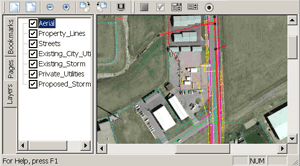
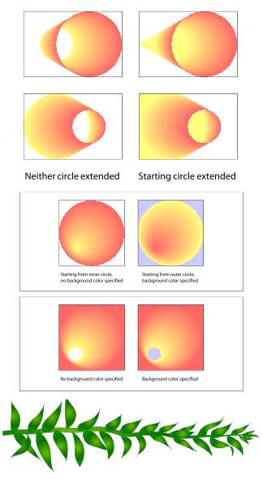

PDFNet SDK - What's New?
April 9th, 2021 - Version 9.0.0
New Features
- Advanced Imaging Module, supporting the DICOM image format and many others.
- Flexible and powerful document generation using office templates. Full reflow, and retains all document styles.
- Added PDF2Word Module that enables conversion to Word. (Convert.ToWord()).
- Added PDF2HtmlReflowParagraphsModule Module and HTMLOutputOptions.SetContentReflow() that can be used to utilize it when calling Convert.ToHtml.
- Added a PDFTron Custom Security Handler that can be used to produce PDF files that can only be decrypted by PDFTron SDK and only if the password is correct and the specified id has been registered by the application. (PDFTronCustomSecurityHandler class and PDFNet.AddPDFTronCustomHandler) This provides a level of security very similar to that of writing a custom encryption method, but is much simpler to use.
- Added an API to manually add or edit marked content. (ElementBuilder.CreateMarkedContentBegin, ElementBuilder.CreateMarkedContentEnd, ElementBuilder.CreateMarkedContentPoint etc.)
- Added an API to produce pages showing the text differences between two pages or documents. (PDFDoc.AppendTextDiff) This API is currently experimental and subject to change.
- Added a new API to trust certificates in the FDF Data/Cert Exchange format. (VerificationOptions.LoadTrustList) This provides overall more correct results during verification than VerificationOptions.AddTrustedCertificates as it can handle more fine-grained trust settings.
- Added new optional trust flags as input to VerificationOptions::AddTrustedCertificate to configure the desired level of trust.
- Added support for specifying locale for Office conversions.
- Added a filetype option to 'Convert' methods that accept a Filter and not a file path.
Other Changes
Other Improvements
- [pdf] Updated Duktape to 2.6.0.
- [jpg] Updated libjpeg-turbo to 2.0.6.
- [tiff] Updated libTIFF to 4.2.0.
- [pdf] Updated OpenSSL to 1.1.1j.
- [all] Added macOS arm64 slice for Apple Silicon.
- [all] Enabled better optimization settings on PDFTron SDK on Windows.
- [xfdf] Significantly optimized the performance of XFDF export.
- [pdf] Optimized creation of PDFDoc, SDFDoc, FDFDoc and ObjSet objects. This has a significant impact on cases that create a large number of these objects.
- [xfdf] Improved support for importing XFDF into PDFs with corrupt Annotations array.
- [xfdf] Generating consistent names on all unnamed annotations for during xfdfexport. This is especially helpful for realtime collaboration use-cases.
- [xfdf] Adjusted rectangle, ellipse, export and import to support nonstandard rotation in import and export.
- [pdf] Adjusted logic for retaining text spacing adjustments, so that it would work with interleaved marked content operators.
- [pdf] Avoid "faded colors" during PDF rendering when color management is disabled and overprint is off.
- [pdf] Avoid writing unnecessary colors and colorspaces when generating annotation appearance streams.
- [pdf] Adjustment to repair corrupt documents with negative or unreasonably large object numbers.
- [pdf] Erase invalid colorspace entries in ImageMasks during PDF/A conversion
- [svg] Better handle corrupt documents with unbalanced q/Q operators in forms during Convert.ToSvg.
- [pdf] Added support for trusting intermediate certificates in the chain during for Digital Signature Verification.
- [pdf] Adjusted corrupt document processing logic to allow for an XRef entry following startxref. Previously this would be treated as garbage data and the rest of the PDF would be skipped.
- [pdf] Improved reading for field values from XFA to better handle strangely formed inheritance structures.
- [xod] Adjusted flattening to disregard cases where the blend mode is specifically set to normal. This reduces unnecessary flattening for ToXod and Flattener improving run time and output quality in these cases.
- [pdf] Optimized PDF/A conversion for files with a lot of font objects.
- [pdf] Optimized text extraction to more efficiently extract styles. This primarily impacts text selection, reflow and use cases that use TextExtractor directly to obtain text styles.
- [pdf] Added support for dashed borders on checkboxes.
- [pdf] Added support for auto-tiling of very large tiff images
- [pdf] A number of new APIs were exposed in the pdfnet-node package.
- [pdf] Handle Exif rotations through the UniversalConversion methods on the Convert class
Bugfixes
- [pdf] Fixed a parsing issue where unusually structured encrypted documents could fail to load.
- [pdf] Avoiding a crash when using incremental download on rare documents that start with a null object.
- [xfdf] Fixed an issue with PDFDoc.FDFUpdate where it could remove RichMedia and other less commonly used annotation types.
- [pdf] Fixed incorrect text extraction word break issue when text includes a vowel sign.
- [xfdf] Fixed an issue in PDFDoc.FDFUpdate where, in rare situations, radio buttons could be incorrectly matched and not function as expected.
- [pdf] Fixed a problem where certain PDF JPEG2000 images with 4 bits per component would display as darker than they should.
- [pdf] Fixed an issue where some documents with XFA values wouldn't take these into account when displaying the selected state of check boxes and radio buttons.
- [pdf] Fixed a problem where the Metadata would still be encrypted even if using SetEncryptedMetadata(false)
- [pdf] Fixed a problem with PDFDocInfo.GetSDFObj() where it would return the trailer rather than the Info object as would be expected.
- [pdf] Fixed an issue with Optimizer where, on certain documents and when subsetting fonts, it could break the appearance of hidden annotations. This could lead to issues later when the annotation becomes no longer hidden.
- [pdf] Adjusted page insertion to clear any DigitalSignatures when inserting into a new document. Previously these would be included, but invalid.
- [pdf] Adjusted handling of Field Flags to ignore them when they are incorrectly applied to Widget only dictionaries.
- [pdf] Adjusted PDF/A validation to not provide an error for Device colorspaces (e.g. DeviceRGB) if there is an associated Default colorspace in the resource dictionary. (e.g. DefaultRGB)
- [pdf] Fixed an issue with the generated appearance of line annotations with inline captions where the line would go through the text.
- [pdf] Fixed an issue with handling of 0 length streams that could lead to slow and unexpected file growth. This issue was especially troublesome when saving large files.
- [pdf] Fix for incorrect color in some DCTDecode images where the embedded colorspace conflicts with the PDF colorspace
- [pdf] Closed potential security issue with FileAttachment annotations, where a specifically constructed annotation could access external servers during XFDF export
- [pdf] Generated fully selectable text when generating complicated shaped text output
- [pdf] Fix for potential non-optimal performance when filling an internal object cache
- [tiff] Fix for potential crash when reading some YCbCr encoded images.
- [pdf] Fixed an issue with creating bad width tables in fonts covering codepoints outside the basic multilingual plane
- [pdf] fixed an issue with bad lookups in a font's toUnicode map when handling codepoints outside the basic multilingual plane
- [emf] Now correctly handle PDFs embedded within EMF files
- [all] Fix for mishandling of short font names in all caps, like "OCR-B"
- [all] Fixed bug with custom font servers which could result in missing the first item in a specified character range
- [all] corrected mapping of fonts specified as both "light" and "bold"
- [all] Fix for incorrect font substitution on Windows systems for some symbol characters
Office-specific
- [office] Can now positively identify encrypted office documents.
- [pptx] Fix for cases where a shape had deeply nested reference to other diagrams.
- [docx] more consistent handling of table widths specified as percentages.
- [office] Fixed issue that could result in incorrect character selection in documents with explicitly specified zero width non-break space characters.
- [docx] Now correctly take endnote number formatting into account.
- [office] Fixed bug with superscript/subscript handling in some cases when resolving local and derived run styles.
- [xlsx] More robust handling of malformed number formatting codes.
- [office] Fixed error in PDF structure output for table cells when converting office->PDF.
- [docx] Fix for semi-transparent fills in some office drawings.
- [docx] More robust handling of grouped office drawings with no shape ID.
- [office] Fixed the default label placement for 3d bar graphs.
- [office] Fixed error with occasional missing chart per-data-point labels.
- [pptx] Added missing support for column layout.
- [docx] Fix for incorrect handling of page breaks immediately preceding a continuous section break.
- [docx] Tuned line spacing to be an exact match to MS Word in more situations.
- [docx] Added support for graphic frames.
- [docx] Improved interaction between tables and floating content.
- [pptx] Fixed mishandling of tab characters within some lists.
- [office] Now correctly handle the "flatTx" attribute.
- [docx] Fix for potential crash in office files with malformed 'oMath' runs.
- [docx] Corrected handling of the 'auto' spacing property for the first and last paragraph in a document.
- [xlsx] Changed default value for unspecified opacity to opaque, rather than transparent.
- [xlsx] Implemented support of rich text for inline strings in Excel.
- [xlsx] Fix for handling of documents with no specified default styles.
- [xls] Fix for potential crash on some malformed xls documents.
- [xlsx] Optimized XLSX memory handling, now use much less memory when converting very large documents.
- [xlsx] More robust handling of malformed formulas in xlsx files.
- [office] Fixed a small memory leak (32 bytes per document).
- [pptx] Fix for not completely resolving the font style for some text.
- [office] Correctly handle data points outside the bounds of the chart axes.
- [office] Now handle clipping for all shapes, not just images.
- [office] Fixed grid line spacing for non-East Asian fonts.
- [docx] Fixed auto spacing between list paragraphs.
- [docx] Fix for too-high line spacing for some text with colored backgrounds.
- [office] Fix for incorrect parsing of percentage values that have percent symbols in them already.
- [docx] Fix for mishandled table borders in some isolated cases.
- [docx] Corrected default behaviour for non-specified vertical anchor in floating tables.
- [docx] Fix for cases where text boxes had a non-zero position and a specified wrap rectangle.
- [docx] Implemented bi-level image effect.
- [docx] Fix for unnecessary internal rounding of some fractional font sizes.
- [office] Fix for mishandling of some stroked text when converting to PDF.
- [office] Fixed drawing of stacked charts with non-zero base value.
- [xlsx] Removed exception when attempting to place some out-of-bounds content.
- [office] Added support for the luminance image effect.
- [office] Fix for mishandling of Thai text justification.
- [pptx] Fix for handling of negative indentations.
- [office] Fixed square text wrapping of rotated images.
- [office] Fix for handling of text spacing in fully justified text produced in older Word versions.
- [office] Fixed bounding box of the circular arrow and pie wedge shapes.
- [xlsx] Fix for scaling of grouped shapes with the two-cell anchor style.
- [docx] Ensure that we draw group shape elements by order of appearance.
- [office] Fixed issue with misaligned right-to-left text in rows with trailing spaces.
- [office] Much improved office equation handling.
- [office] Now translate some elements of user-specified structured document tags within OOXML to the converted PDF.
- [xls] Fixed hidden sheet state conversion for xls.
- [xls] Now correctly ignore comment shapes.
- [office] Implemented support of semi-transparent gradient fill.
- [xlsx] Now support excel rounding functions.
- [docx] Implemented handling of vanished paragraphs.
- [doc] Fixed a number of bugs with handling of numbered lists.
- [docx] Fixed automatic text color on a dark page background.
- [office] Fixed a performance issue with chart drawing, no longer waste time on non-visible elements.
- [xlsx] Fix for incorrect ISBLANK implementation.
- [xlsx] correct handling of row custom height and dyDescent.
- [docx] Better handling for custom page numbering mixed with non-custom.
- [pptx] Take trailing blank lines into account when centering text vertically.
- [docx] Correctly handle cases where a paragraph contains only floating picture anchors and a line break.
- [xlsx] Do not wrap text in date-formatted cells.
- [xls] Implemented AutoFilter support for XLS format conversion.
- [office] Added support for arbitrary text rotations.
- [office] Added support for text which is horizontally scaled to it's container.
- [office] Implemented double and heavy underlines and strike through styles.
- [xlsx] Added missing support for some forms of horizontally merged cells.
- [office] Many improvements to chart drawing and axis positioning.
November 30th, 2020 - Version 8.1.0
New Features
- PAdES Digital Signing is now supported. (using the new function DigitalSignatureField.UseSubFilter)
- Included electron support for versions 6-10 in the pdfnet-node npm package.
- MSG conversion using Outlook interop is now supported.
Other Changes
Roughly categorized, not an exhaustive list.
Improvements
- [pdf] Prevent Optimizer from throwing exceptions on documents with a corrupt destination nametree.
- [pdf] Improved time of verification output in Digital Signature Validation to better match other PDF solutions.
- Updated PDFTron SDK on Linux to be compatible with older versions of Linux. This change allows PDFTron SDK to be compatible with GLIBC 2.9+. (formerly it was compatible with GLIBC 2.17+)
- [pdf] Will now handle locally served custom webfonts synchronously, automatically using them as a source for font substitutions.
- [pdf] Performance optimizations for global font caching. Improves font substitution performance on Windows, Linux, and Android.
- [image] Updated libpng to version 1.6.37.
Fixes
- [pdf] Fix for rare divide-by-0 error when blending transparency groups in overprint preview mode.
- [pdf] More robust treatment of corrupt documents where we are unable to recover any sort of page tree.
- [office] Fixed an off-by-one error in font coverage ranges, which could lead to poor font selection in isolated cases.
- [pdf] Initial demo license initialization is now fully thread safe. Previous logic had potential issues when Initialize was called simultaneously from multiple threads.
- [pdf] Fix for incorrect handling of some text outside of the basic multilingual plane when using ElementReader.
- [pdf] Match the behaviour of Acrobat reader when handling grayscale images with conflicting ICC and image pixel formats.
- [pdf] Fix for rendering of images with a black matte when blending edge pixels onto a fully transparent backdrop.
- [pdf] Improved logic for selecting charmaps from embedded truetype fonts. (in the case when there are multiple viable maps)
- [pdf] Fixed processing of encoding tables in the case where the font names resemble hex digits.
- [pdf] Fix for our handling of some JPEG 2000 encoded images where the pixel format in the image has conflicting data.
- [pdf] Better handling of pre-existing FontConfig configurations on modern Linux systems.
- [office] Fix for potential incorrect font selection when handling mixed arabic and latin text.
- [office] Tune substitute font scaling so that we are less likely to end up extreme scaling factors.
- [office] Better handling of symbolic fonts (eg. wingdings) on systems where we have a poor substitute font selection.
- [office] Fix for rare crash when processing Excel sheets with text that overflows cell boundaries.
- [office] Fix for potential crash when handling format strings with particular symbols in the string portion.
- [office] Better thread safety for internal font metric lookups.
- [office] Fix for failed doc conversions in some isolated cases where expected parts of the source file are missing.
- [office] Fix for incorrect scaling of some rotated picture elements.
- [office] Tuned list indentation for powerpoint files.
- [pdf] Avoid errors when Optimizing due to direct fonts in the PDF.
- [pdf] Fixed a memory leak in Digital Signature Verification. This also impacts Secure Timestamping and LTV support since these use Verification.
- [pdf] Fixed a rare issue where Linearized PDFs could be detected as not linearized.
- [pdf] Fixed an issue where Digital Signature Verification could disallow certain Long Term Validation updates.
- [pdf] Fixed issues with Unicode writing ElementWriter APIs in Node.js.
- [pdf] Updated line annotation appearance generation (used when displaying or creating lines) to better take line dashes into account. Previously the phase would be different than expected.
- [pdf] When printing the print and hidden annotation flags are now properly taken into account.
- [pdf] Handle corrupt document where the Annotations entry is not an array in FlattenAnnotations.
- [pdf] Better handle uncommon fonts with 3 byte charcodes.
- [svg] Handle corrupt cases where the PDF has graphics state changes in BT/ET blocks for PDF to SVG conversion.
- [pdf] Updated font Substitution on Apple platforms to handle unicode characters beyond the basic multilingual plane.
- [xfdf] Fixed a problem where in rare situations extracting XFDF from PDF could produce a document with an incorrect and large font size.
- [pdf] Long Term Validation support will now update rather than rewriting existing Long Term Validation data.
- [pdf] Fixed an error with Page.GetBoundingBox which could cause it to malfunction on corrupt documents with mismatched group begin and group end elements within a form. This also had an impact on Page flattening which uses this method.
- [pdf] Diff.AppendVisualDiff will now better take into account the page rotation and cropping present in the input pages.
- [xfdf] Simplified the conditions for exporting annotation appearances in XFDF. In particular they will now be included even if that the annotation type is unsupported or certain annotation entries are missing.
- [pdf] Fix for parsing color from the Default Style (DS) entry. This improves the results after importing certain XFDF files.
- [pdf] Fixed a memory leak in FilterWriter.WriteBuffer for .Net Core.
- [xfdf] Fixed a problem where annotations with certain goto actions could fail to match during FDFUpdate.
September 4th, 2020 - Version 8.0.0
New Features
- Digital Signature Verification is now out of beta.
- New APIs for certificates (X509Certificate) and a number of other Digital Signature related classes.
- Digital Signing support for Embedding Secure Timestamps and Long Term Validation (LTV).
- Accessibility: built in office conversion now produces tagged PDFs.
- Added native support for the xls format, rounding out our support of the 6 main "office" formats (docx, pptx, xlsx, doc, ppt, and now xls)
- Added support for Right-to-left languages within office files.
- Added options for converting Excel sheets into multiple PDF pages.
- Added new API for text shaping, enabling support for visually complex scripts (like Thai and Hindi) using elementbuilder.
- Support for Compressing Monochrome (1 bit per pixel) Images with CCITT Group 4 lossless compression in Optimizer or during PDF image creation.
- Utility functions to refresh all missing appearances and more easily create custom appearances. (PDFDoc.RefreshAnnotAppearances() and Annot.RefreshAppearance(RefreshOptions))
- Support for Option Content Groups/Layers (SetOCGContext) in TextExtractor and TextSearch.
- Added a new function PDFACompliance.GetDeclaredConformance which can get the conformance level specified in the document.
- Node.js: added support for TypeScript and Node versions 13 and 14.
- CAD module: added options to specify background color, color mode, handling of thin lines, and xref search paths.
Changed Behaviour
- By default Optimizer will now use CCITT Group 4 compression for monochrome images. This is because the previous default of JBIG2 caused a number of issues due to its lossless nature.
- The display and appearance generation of Rectangle annotations has been adjusted to be more in line with other applications. It is recommended to test any custom creation or viewing logic for these annotations.
- The display and appearance generation for FileAttachment annotations has been adjusted to be more in line with other applications. In particular the aspect ratio has been changed for certain icons. It is recommended to test any custom creation logic of these annotations and refer to the FileAttachment class documentation for more information about the new appearance aspect ratios.
- During PDFViewCtrl.OpenUrlAsync placeholder pages (for those which haven't finished downloading) will now throw an exception if they are edited. Most viewers handle this by disabling these edits during download.
- TextExtractor and TextSearch now use the default OCG/Layers by default.
- By default the logic to skip the watermark layer for Text Extraction has been disabled.
- Changed Field.SetValue() to no longer turn on the current radio button when passing "True" "Off" or "On". The boolean version of SetValue() should be used instead for this.
- The `Convert.StreamingPDFConversion` API will now throw an exception in the case where it is unable to initialize the conversion (previously returned a null or invalid object
Other Changes
Roughly categorized, not an exhaustive list.
Improvements
- [pdf] PDFViewCtrl.OpenUrlAsync has been optimized significantly by reducing contention on the document lock.
- [html] Updated HTML2PDF module on MacOS, since the latest versions of the operating system no longer support 32-bit applications.
- Node.js builds no longer require a step to install or reference the library on Linux/Mac.
- [office] Improved .msg office interop conversion.
- [pdf] Copy over calculation order as appropriate during page import or merge. This is important to keep certain JavaScript actions working.
- [pdf] Fixed an infinite loop in linearized save when handling corrupt documents with a page-tree cycle.
- [pdf] Avoid throwing errors when encountering corrupt line operators that have non-number parameters.
- [xfdf] Support importing appearance image data in Signature Widgets.
- [pdf] Updated diff logic to reduce exceptions thrown on corrupt documents.
- [xfdf] Avoid throwing exceptions on XFDF export when encountering corrupt annotation objects.
- [pdf] Adjusted Optimizer to process existing annotation appearances. This gives a bit more room to reduce the document size in addition to fixing some problems with the subset option.
- [svg] Adjusted PDF2SVG logic to flatten paths filled with patterns, since these were not previously supported.
- [pdf] Adjustment to throw out integers that are over implementation limits during parsing. This better matches the behaviour of other PDF consumers.
- [pdf] The cache file provided to PDFViewCtrl.OpenURLAsync will now be written even if the server doesn't support byte ranges or Content-Length.
- [xfdf] Improved error handling for corrupt annotations during FDFUpdate.
- [xod] In error cases where temporary files cannot be opened throw exceptions to the user rather than failing silently.
- [pdf] Improved logic for rebuilding corrupt documents to better handle indirect length entries.
- [xfdf] Added repair logic in PDFDoc.FDFUpdate for corrupt Fields that are not in the Acroforms dictionary. This is important to allow the Field value to be updated.
- [xfdf] Improved identification of changed annotations in PDFDoc.FDFUpdate in order to keep more existing annotation appearances.
- [pdf] Updated FieldIterator to avoid returning Null objects on corrupt documents that utilize these in the field hierarchy.
- [pdf] Updated document Resource caching logic to provide much better performance on heavily multithreaded applications.
- [pdf] Improved error handling in the Node.js interface.
- [pdf] When importing objects into a new document (for example when merging) avoid throwing an exception if subobjects are corrupt.
- [xfdf] Added better handling for corrupt annotation Border entries in XFDF export.
- [pdf] ElementBuilder.CreateTextRunHelper will now just use the input as charcodes for some symbol fonts, since unicode input doesn't make much sense for such fonts.
- [pdf] Much improved handling of font substitution internal flow, resulting in more accurate matches and better performance.
- [pdf] Improved the performance of the Windows font substitution backend, making it better at finding Bold and Italic font variants in some situations.
- [tiff] Add support for extra tiff samples in the case where channels are arranged in a planar configuration.
- [pdf] More robust handling of (corrupt) files with non-embedded fonts and missing toUnicode maps.
- [pdf] Improved error messages for failed conversions.
- [pdf] More robust handling of (technically corrupt) type0 CID fonts with a CIDToGID map.
- [pdf] Improved pixel-hinting of thin rectangles that partially overlap clipping paths.
- [pdf] Improved support for extended unicode text (outside of the basic multilingual plane)
- [tiff] Added support for YCbCr colorspace images.
- [OCR/CAD] Better error messages from sub-modules
- [OCR] Improved logic for determining the "native" dpi of an incoming document, and added option to explicitly specify the dpi.
- [CAD] Now support referenced .gp4 images in CAD files.
Fixes
- [pdf] Fixed an occasional crash when flattening annotations on a specific type of file.
- [pdf] Updated hide action logic to also consider with the noview flag. This fixes actions on an uncommon type of document that relies on this flag.
- [pdf] Fixed occasional race condition crash when viewing some PDF prime documents.
- [pdf] Adjusted ContentReplacer to avoid introducing unrelated changes when updating certain PDF files.
- [xps] If PNG image has an invalid resolution the default DPI is now used in xps to pdf conversion.
- [xfdf] Fixed a problem on certain files during XFDF export where, in rare cases, annotation properties could be written on the wrong element.
- [office] Fixed a breakage in excel support through interop.
- [xfdf] Adjusting appearance rendering logic for stamp annotations during XFDF export to better support pattern transformations.
- [pdf] Adjusting reflow squiggly underline output to use a wavy underline rather than strikeout.
- [pdf] Fixed a bug in SDF.NameTree where the tree could be split incorrectly. (and certain values could become inaccessible)
- [pdf] Fixed a crash in Field.SetValue if called on a corrupt Widget without a connected field.
- [pdf] Fixed an issue setting the value of certain choice fields.
- [xfdf] Adjusted support for MaxLen property to use the value in the first Widget, which better matches behaviour in other viewers.
- [pdf] Fixed a potential crash calling CloseDoc() after there has been an error during download/PDFViewCtrl.OpenUrlAsync.
- [pdf] Fixed corrupt document repair to ensure that the last object of a given number is used.
- [pdf] Adding check for badly formed stream objects masquerading as Object Streams to avoid throwing them out on save.
- [pdf] Fixed a crash in FreeText.RefreshAppearance when encountering an empty DA entry.
- [xod] Fixed a problem where the first few thumbs would be included when streaming to XOD even if they were turned off.
- [pdf] Fixed an occasional crash in PDFViewCtrl.OpenUrlAsync, triggered by an early failure in the download process.
- [image] Fixed a crash when encountering problems in multipage tiff conversion.
- [xfdf] Fixed a bug where, in rare cases, field values could incorrectly end up with XML escaped output after XFDF import.
- [xod] Added basic support in XOD conversion for Image Soft Mask Matte entry.
- [pdf] Fixed an issue where calling ElementWriter.Begin could incorrectly throw an exception on certain types of documents.
- [pdf] Fixed a problem with image downsampling of annotation appearance streams. Previously these would rarely be downsampled.
- [xfdf] Fixed a problem with importing/merging fields with complex inheritance structure.
- [pdf] Fixed DigitalSignatureField.ClearSignature() so it would clear global document state if no signatures remain.
- [xps] Fixed a problem with extracting the dpi from jpeg or tiff files when they have dots-per-cm units.
- [html] Dropped the font size limit for html2pdf to work better with the latest macOS and retina displays.
- [pdf] Added default style parsing for text color in FreeText annotations. This fixes issues with text color when importing from XFDF.
- [xfdf] Fixed a problem handling corrupt Pages with duplicate annotation ids in PDFDoc.FDFUpdate.
- [pdf] Text extraction will now properly handle subforms even if a corruption is encountered in them.
- [pdf] When redacting the logical structure is now erased when to better ensure nothing relevant slips through.
- [pdf] Fixed a problem handling radio buttons with a non-unicode on state.
- [xfdf] Added support for Stream values in text fields when exporting XFDF.
- [pdf/xod] Fixed an issue with flattener where text that was covered by an almost transparent layer before being occluded would be displayed on top.
- [pdf] Resolved an issue with drawing rectangle annotations with the cloudy style.
- [bmp] Fix for handling of some transparent .bmp files where the background could remain uninitialized.
- [pdf] Fixed an issue with our handling of malformed cmaps that could result in bad memory accesses.
- [viewer] Fix for potential deadlock when calling PDFView.Update()
- [pdf] Fixed issue with separation blending not working correctly when the page blend space is RGB.
- [pdf] Fixed potential crash when rendering a softmask with an empty group entry.
- [pdf] Fixed a rare issue with resolving cmap entries within TrueType fonts that could lead to garbled text rendering.
- [OCR] Fixed a bug where we would not properly handle escaped backslashes within json input.
Native Office Fixes and Improvements
- [office] More accurate reproduction of tinted theme colors
- [office] Many improvements to embedded font resolving, with powerpoint files seeing the most improvement.
- [pptx] Can now make use of docx "resource documents" when converting pptx files
- [office] Improvements to our handling of "tricky" font names that resemble other known fonts.
- [office] Change default checkbox rendering to use a box, rather than a windgdings glyph.
- [pptx]Added color override map support for each individual slide, as opposed to just the master and layout slides.
- [office] Chart improvements: data labels are now better supported, improved legend positioning, allow entries to be deleted from the legend.
- [docx] More precise handling of text-float overlap and interactions.
- [pptx] More accurate determination of text line height in powerpoint.
- [docx] Better resolving of floating content positions in complex documents.
- [docx] Added support for the "dxa" form of table margins.
- [docx] More accurate calculation of table row heights.
- [office] Added basic support for the multiLvlStrRef element in charts.
- [office] Added preliminary support for some math elements.
- [office] More robust handling of unsupported graphic data (attempt to use alternate content in more situations)
- [office] Added support for vertical text within table cells.
- [office] Added support for tiled image fills.
- [office] Added support for duotone image recoloring
- [docx] Added support for repeated table headers, where the header of a table is placed at the top of each page.
- [office] Now correctly resolve solid fill colors with an inherited "noFill" property.
- [doc] Fix for handling of .doc tables with mismatched content and column count.
- [docx] Fix for potential errors in mapping of individual symbol elements.
- [pptx] Fixed issue with decoding some embedded glyphs.
- [office] Fixed issues with resolving "auto" background colors in different contexts.
- [docx] Fix for oversize tables not properly overflowing their parent containers.
- [docx] Fixed error in treatment of individually set cell margins (under the 'tcMar' element)
- [docx] Fixed bug with resolving inherited hanging indent values.
- [docx] Relaxed the rules for placing floating content in footers, rather than skipping it.
- [office] Fix for bug where text styles were not fully resolved when determining the height of a line break.
- [xlsx] Fix for a bug where unresolved formatting codes would result in a failed conversion.
- [office] Now correctly handle vertically merged table cells in tables with the "gridBefore" property
- [office] Improved support for handling of embedded EMF files.
- [excel] Fix for our handling of cells with the special number format code "General"
- [excel] Fix for mishandling of table margins specified within the tblPrEx tag.
- [excel] Now allow conversion of xlsx sheets with no fonts defined.
- [docx] Fixed issue where a local "auto" line spacing rule would not properly override a global non-auto spacing.
- [docx] Now correctly handle NUMPAGES dynamic content within fldSimple elements.
- [excel] More robust handling of format codes with leading and trailing spaces.
- [docx] Correctly handle the case where numbered lists should inherit styles from the paragraph run properties.
- [docx] Fixed a bug where shapes were incorrectly constrained to the bounds of the page area.
- [pptx] Fix for occasional bad text positioning inside shapes.
- [pptx] Fixed incorrect cropping of transformed images.
- [office] Fixed handling of images with a global opacity value.
- [office] Fixed occasional incorrect handling of isolated symbols (list bullets, for example)
- [ppt] Fix for incorrect handling of default kerning values for ppt files.
- [doc] Fix incorrect positioning of grouped shapes within .doc files.
- [office] Fixed a number of issues with chart axis positioning
- [doc] Fixed incorrect handling of MS1252 encoded text in doc files.
- [office] Fixed a crash in pie chart drawing when trying to draw 0-size slices.
- [office] Fix for mishandling of some format codes with non-ascii values.
- [docx] Fixed a number of issues with content controls
February 18th, 2020 - Version 7.1.0
New Features
- Digital Signature Verification
- Added support for creation of Viewer Optimized PDF files (PDFDoc.SaveViewerOptimized).
- Viewers have been updated to take advantage of Viewer Optimized PDF.
- Added annotation API to read, write and delete custom data. (Annot.SetCustomData, Annot.GetCustomData and Annot.DeleteCustomData).
- Added the SetRequiredFieldBorderColor() method to PDFView and PDFViewCtrl.
- Added functions Ink.SetHighlight and Ink.GetHighlight to choose whether the Ink will display like a highlighter.
- Added ElementWriter.WriteGStateChanges() which can simplify use cases where the intention is to only write the graphics state of an element.
- Added options for line weight and auto rotation to CADConvertOptions.
- Added DPI option for to OCROptions.
- Added built-in support the ppt format, can now view and convert these files to pdf.
Changed Behaviour
- .Net Framework builds are now dependent on the Microsoft Visual C++ Redistributable Packages for Visual Studio 2013 rather than the Microsoft Visual C++ 2010 Redistributable.
- Digital Signatures will now be signed with SHA256. (previously SHA1).
- Ink.SetBlendMode and Ink.GetBlendMode functions have been deprecated.
Customers are encouraged to use `Ink.SetHighlight` and `Ink.GetHighlight` instead, as they are more aligned with the PDF specification, and offer greater compatibility with other PDF readers, such as Adobe Acrobat.
Other Changes
Roughly categorized, not an exhaustive list.
Improvements
- [pdf] Page labels are now included when converting PDF -> EPUB
- [pdf] When generating appearances for Widgets, only use a font if it can represent all of the glyphs that are meant to be drawn in the widget.
- [pdf] Adjusted XFDF import of Widgets to not be dependent on the position of elements within the XFDF document.
- [xod] Added logic to upsample the smaller of the soft mask or associated image when converting to XPS/XOD. This allows us to export the entire image as RGBA, which greatly improves rendering performance and memory usage.
- [pdf] Updated Annot.Flatten and ElementBuilder.CreateForm to have complete support for nozoom, norotate and sticky note annotations.
- [pdf] Improved FieldIterator support for invalid/null/free Field entries.
- [pdf] Updated FDFUpdate to be less strict about certain differences in the XFDF. This allows it to maintain original annotation appearances more often.
- [pdf] Added support for multi-select list boxes when exporting and importing XFDF.
- [xod] Added an option for image smoothing in XOD. This is important to allow XOD to exactly match PDF rendering.
- [pdf] FileAttachment annotations can now be imported from XFDF.
- [pdf] Can now initialize the SDK with a full license key after initializing with an empty key within the same session.
- [xps|office] Optimization for finding the zip signature in damaged zip files/non-zip files. About 1000 times faster for these cases.
- [office] Added support for balanced column layouts.
- [office] Added support for images with the 3D camera rotation properties.
- [office] Added support for embedded hyperlinks, they are not converted to the equivalent PDF annotation.
- [office] Added support for clipping content within text box and table cell.
- [xlsx] Added support for diagonal cell decorations.
- [office] Added support for extended cell border styles.
- [xlsx] Improved memory usage for sheets with large numbers of columns and/or rows
Fixes
- [pdf] Fixed a potential crash when importing XFDF Widgets.
- [pdf] Fixed a potential race condition when running PDF/A conversion in multiple threads.
- [pdf] Fixed a crash exporting XFDF on very specific PDF files.
- [pdf] More lenient handling of oddly formed floating point numbers.
- [pdf] Fix for issue where importing PDF pages was not pulling in OCG layers used only in annotations.
- [pdf] Fixed issue where we could incorrectly identify large glyph indices as UTF16 surrogates.
- [pdf] Improved internal unicode data paths to fully support codepoints off the Basic MultiLingual Plane.
- [pdf] Work around Java string behaviour where an added null terminator could make the string not equal.
- [xod] Adjusted XOD flattening and rendering logic to handle the case where special blend modes are used within transparency groups. Necessary because these cases cannot be easily represented in xod/xps.
- [pdf] Fix for potential performance issue when skipping a lot of nulls at the end of a file.
- [pdf] Fixed XFDF import error, where if an arrow had the xml attribute "end" before "start" the points could be switched around.
- [pdf] Avoided exception from being thrown in XFDF export when encountering zero length action arrays.
- [pdf] Sanitizing metadata strings in PDF/A to avoid erroneously reporting errors when there are trailing nulls.
- [pdf] Fixed a problem in TextExtraction where e_remove_hidden_text would malfunction when the page is rotated.
- [pdf] Fixed a problem in TextExtraction where fully clipped text was not actually skipped.
- [pdf] Fixed a bug in RemoveAppearance where it wouldn't do anything without an appearance state dictionary. This means it would fail for all common annotation types.
- [xod] Annotations appearances are now always included even if the annotation is hidden, so they can be shown by consumers (like WebViewer) when the setting is changed.
- [pdf] Adjusted stamp appearance exporting logic in XFDF to take page rotation into account. This is important to avoid losing image quality when importing and exporting.
- [pdf] Added repair logic for corrupt PDF documents with multiple Field objects with the same name. This is only applied when NeedAppearances = true.
- [pdf] Fixed problem with importing XFDF destinations where some values are treated as default.
- [pdf] Adding logic to remove unused popups when importing XFDF. This could appear as extra invisible annotations in certain viewers.
- [pdf] Adjusted hint stream writing for linearized save to align bytes between sections for embedded thumbnail data.
- [pdf] THead, TBody, TFoot are mapped to nonstruct when converting to PDFA-1. Previously conversion of files containing these would not pass validation for other vendors.
- [pdf] Flattener public API could watermark even if a user had the permission. Now properly handles license permission.
- [pdf] Fixed XFDF Widget Import issues that would typically lead to an exception being thrown.
- [html|epub] Fixed bug where under certain circumstances the same HTML element with the same ID could be injected (malformed HTML).
- [xod] Fixed a problem in PDF to encrypted XOD conversion where the appearance file could be inaccessible from WebViewer.
- [pdf] Sorted out a problem where certain corrupt PDF files would throw exception on Linearized save.
- [pdf] Added support for non-integer intensity for cloudy annotations.
- [pdf] Fix some cases where we would not properly render field highlights with no appearance.
- [pdf] Fix a rare issue with viewer render tiles not being invalidated correctly.
- [pdfview] Fixed an issue where goto actions could scroll the view away from the destination page.
- [pdf] Fixed an issue where temp files would potentially not get cleaned up after XOD creation.
- [pdfview, c++] Fix for potential crash when rendering annotations with 1-pixel bounding boxes.
- [pdfview, c++] Fixed a bug that could cause a refresh loop in some cases involving annotations with the nozoom flag set.
- [pdfview, c++] Fix for annotation edit control not updating correctly on zoom + pan of the document.
- [pdf] Added support for the "Matte" softmask property.
- [pdf] Handle the case where a DeviceN CS is specified as being an NChannel subtype, but is missing the Colorants array.
- [pdf] Fix for isolated cases where the stroke and fill for a softmask should be obtained from the parent context.
- [pdf] Fix for rare crash when rendering content with constant alpha value of 0.
- [pdf] No longer render fileattachment annotations when there is no icon set.
- [OCR] Improved handling of scaling with rotated pages.
- [pdf] Improved internal unicode data paths to fully support codepoints off the Basic MultiLingual Plane
- [pdf] Fix for rare errors when expanding CCIT encoded images on linux.
- [pdf] Improved handling of the "All" separation in some cases when rendering in overprint preview mode.
- [pdf] Fix for bad text extraction in some cases where isolated vertical text lines could improperly change our treatment of the page.
- [CAD] Will now determine the ideal page size automatically in more cases.
- [CAD] Better reporting of error conditions.
- [CAD] PDFs converted from DWG files now convert the page labels.
- [pdf] Improved handling of ttc font files. More complete enumeration of fonts within the collection.
- [pdf] More robust font substitution when dealing with edge cases and non-typical font name formatting.
- [pdfview, c++] Fix for unresponsive behaviour when progressive rendering is disabled.
- [pdfview] Fixed case where GetAnnotationAt() could return incorrect results when handling highlight annotations with multiple quads.
- [pdf] Fix for slight over-clipping of curved shapes which are flush with the edge of a clipping path.
- [pdf] Fix for handling of linearized saves when the Undo/Redo manager is in use.
- [pdf] When using ElementBuilder, now correctly generate CID fonts containing glyphs for codepoints outside the basic Mulilingual Plane.
Office Fixes
- [docx] Improved support for positional tabs.
- [office] Better support for fonts with non-standard name formatting.
- [office] Improved support for incomplete embedded fonts.
- [office] Improved support for symbol fonts.
- [office] Improved support for bullet list with custom bullets.
- [docx] Improved support for east Asian text placement, in particular when grid placement is enabled.
- [xlsx] Fixed bug where certain equations within conditional formatting rules would not be evaluated.
- [docx] Fix for smart art with nested text rotations exceeding 360 degrees.
- [docx] Make use of AlternateContent->fallback content in the case where the primary content cannot be used.
- [docx] A number of fixes for positioning of floating elements within table cells.
- [docx] Improvements to the placement of floating elements anchored to paragraphs.
- [office] Fixes for positioning of floating tables.
- [office] A number of fixes for positioning of floating content in multi-column layouts.
- [office] Improved support for change tracking. Now support style-only changes, changes within bullet lists, and multiple-user changes.
- [docx] Improved handling of first-line indentation in a number of situations.
- [xlsx] Added support for the ISBLANK function.
- [pptx, docx] Many refinements to spacing of vertical placement of text lines, both within and between paragraphs.
- [xlsx] A number of improvements to placement of chart labels, data, and axes.
- [xlsx] Fixed case where empty sheets could cause us to ignore other non-empty sheets in the document.
- [xlsx] Now handle "automatic" cell coloring correctly.
- [docx] Corrected conversion of form checkboxes.
- [pptx] Fixed bug that could apply the default text style to empty lines in some cases.
- [xlsx] Correctly handle the case where the font list has no "count" attribute.
- [xlsx] Multiple improvements to date and number formatting.
- [office] Improved handling of fonts that have a negative line gap (like Courier New).
- [docx] More precise handling of text positioning around floating elements.
- [office] More robust font subsitution handling with text containing unusual whitespace codepoints.
- [office] Fix for incorrectly adding an outline to text with the draw_outline attribute set to 0.
- [docx] Fix for infrequent table layout error that could sometimes skip table rows when breaking across pages.
- [docx] Corrected placement of some headers and footers on even pages.
- [docx] Fix for occasionally placing an empty row at the end of a page when splitting tables across pages.
- [xlsx] Fix for skipping cell borders in isolated cases involving horizontally merged cells.
- [xlsx] Ensure that the page size is sufficient to contain all drawings and charts.
- [xlsx] Fix for incorrect handling of some unicode elements in format strings.
- [doc] Fixed bug that resulted in incorrect enumeration of section properties.
August 20, 2019 - Version 7.0.1
New Features
- Added utility functions to ComboBoxWidget and ListBoxWidget which simplify reading and editing options. (GetOptions(), ReplaceOptions() and RemoveOption())
Other Changes
Roughly categorized, not an exhaustive list.
Robustness
- [xod] Better support corrupt PDF content streams with mismatched BT and ET entries.
- [xps] Fixed a potential crash when reading JPEG XR files on non-windows platforms.
- [pdf] Fixed an issue with PDFViewCtrl.OpenURL error handling when losing internet connection while download is in progress.
Improvements
- [pdf] Adjusted ElementBuilder.CreateRect to support input rectangles that are not normalized.
- [xps] Added basic detection for proprietary PhotoShop headers that impact jpeg scaling in XPS files.
Bugfixes
- [pdf] Adjusted XFDF import for Form Fields to properly construct missing fields and appearances.
- [pdf] Fixed a problem with DigitalSignatureField.GetDocumentPermissions.
- [pdf] Fixed filled Polyline rendering when there are line beginning/ending styles.
- [pdf] Fixed a problem where per page XFDF export would sometimes not include all of the field attributes.
- [xod] Fixed an uncommon issue where some completely masked graphics would be visible after ToXod conversion.
July 25, 2019 - Version 7.0.0
New Features
- CAD conversion module and API (`Convert.FromCad`)
- OCR module and API (`OCRModule` class)
- Updated API for Digital Signature creation (`DigitalSignatureField` and `DigitalSignatureIterator` classes).
- Programmatic, low-level Undo/Redo API. (`UndoManager`, `ResultSnapshot` and `DocSnapshot` classes)
- Added an in-memory interface for rendering individual separations. (`PDFDraw.GetSeparationBitmaps `and `PDFRasterizer.RasterizeSeparations`).
- Added extra modes to geometry snapping: snap to point on line, snap to midpoint, and snap to line intersection.
- Added Widget functions to Set/Get Text Color, Font and Font Size.
- New Widget API for form field creation/access. (`TextWidget`, `CheckBoxWidget`, `RadioButtonWidget`, `RadioButtonGroup`, `PushButtonWidget`, `SignatureWidget`, `ListBoxWidget` and `ComboBoxWidget` classes).
- Added an API allowing sound annotations to be created from raw sound data. (`Sound.CreateWithData`).
- New method for easily rotating an annotations appearance by an arbitrary angle.
Changed Behaviour
- ToXod default options have been changed. The XOD default setting for flattening is now `e_high_quality` (previously `e_fast`) and the default setting for line thickening is false. (previously true).
- The HTML2PDF module is now included as part of desktop release packages.
- Unused ConnectToCloud API was removed.
- The GDI+ Rasterizer has been marked as deprecated and will be removed in a future version of PDFNet.
Other Changes
Roughly categorized, not an exhaustive list.
Robustness
- [pdf] Improved error handling when processing JPEG 2000 files.
- [pdf] Handle separation names that are not valid Unicode.
- [pdf] Better recover from errors in initial document loading when JavaScript is enabled.
- [pdf] Fixed a problem where particular JBig2 files could not be completely read.
- [pdf] Better handle corrupt documents consisting of two PDFs stitched together.
- [pdf] More robust handling of temp files and directories with unexpected permissions.
- [xod] Now limit the number of pattern usages before flattening will occur. This is needed to avoid frequently used simple patterns from making very complicated output files.
- [pdf] Updated `ElementWriter` to better support editing of any existing PDF file when used in conjunction with `ElementReader`. (`ElementWriter.SetDefaultGState` and updated `ElementWriter.Begin`).
Improvements
- [pdf] Updated XFDF import to support importing Form Fields, Links and File Attachments.
- [pdf] Output the "All" separation when in separation export mode.
- [xod] Added elements to XOD files to support faux bold (stroked and filled text).
- [pdf] Added better handling for zero-area filled paths.
- [pdf] Improved redaction annotation rendering to support custom attributes used in Acrobat.
- [pdf] Support encrypting files with no user password using AES 256.
- [pdf] Adjusted `RefreshAppearance` for Radio Buttons to produce output similar to other PDF viewers.
- [xod] Adjusted logic so if flattening is not disabled that pages with Knockout or Isolated Transparency groups are flattened.
- [pdf] Updated logic so that the level passed to `PDFNet.SetDefaultFlateCompressionLevel()` will be respected even for image compression. (where the maximum compression setting would generally be used).
- [pdf] Added support for soft masks in PNG and TIFF image export.
- [pdf] Added a dropdown indicator for combo boxes.
- [pdf] Now automatically support arbitrary rotations of rubberstamp annotations.
Optimizations
- [pdf] More efficient handling of empty transparency groups.
- [pdf] Improved performance of `SetDoc` in `PDFview` by asynchronously reading page info.
- [pdf] Lowered memory usage when incrementally saving to stream.
- [pdf] Optimized reading from a file that has been edited.
- [pdf] Optimized parsing of PDF documents with large amounts of whitespace.
Bugfixes
- [pdf] Fixed a bug where `IsModified` can return true after a save when undo redo is used.
- [pdf] Fixed bug where we would fail to save to documents with malformed "Rights enable" dictionaries.
- [pdf] Fixed a bug where we would sometimes mishandle softmasks smaller than their containing group.
- [pdf] Fixed bug where disabling annotation rendering in the viewer would not disable it in thumbnails.
- [pdf] Fix bug in .Net wrapper where exceptions thrown in the `PDFDoc` constructor could crash.
Office
- [xlsx] Added support for "sparkline" charts in xlsx files.
- [xlsx] Added support for the NPER (number of periods) financial function.
- [docx] Now correctly display change-tracked content.
- [xlsx] Now correctly display drawings in sheets that are outside the table bounds.
- [docx] Better support for text frame elements in .docx files.
- [xlsx] Added support for inline strings within table cells.
- [xlsx] Improved behaviour when text within a cell exceeds the horizontal cell bounds.
- [docx] Improved positioning of some forms of rotated images.
- [xlsx] Improved positioning of some forms of rotated images.
- [pptx] Slightly improved handling of text effects.
- [xlsx] Improved positioning category axis legends.
- [docx/pptx] More robust handling of symbol encoded text runs.
- [office] Better handling of oddly named fonts, where the style is part of the name
 March 4, 2019 - Version 6.10.0
March 4, 2019 - Version 6.10.0
New Features
- PDF Compare/Diff API (PDFDoc.appendVisualDiff)
- Snap to Geometry API (in PDF Viewers)
Improvements and Bugfixes
- Updated XFDF export/import to better support Measure Tools, Redaction Annotations and Form Field Tooltips.
- Support for file sizes greater than 4gb on 32 bit platforms.
- Many improvements and fixes to Office to PDF conversion outputs.
- Reduced memory usage during parsing and rendering.
- Reduced the number of unnecessary resources pulled in by page import.
- Improvements to font substitution logic.
- Better handling for corrupt documents, especially corrupted streams.
- Many other miscellaneous bug fixes.
November 2, 2018 - Version 6.9.0
New Features
- PDFA Validation and Conversion have been overhauled to provide output much more compatible with VeraPDF and the PDF/A specifications/technical notes.
- XOD files are generated with built-in annotation appearance streams. This allows WebViewer 4.0+ to render annotations containing these streams as they appear in other PDF viewers.
- Added an option to PDFViewCtrl.OpenUrl which will restrict download usage. This is largely to reduce data usage/bandwidth, but can also be used for security reasons.
- Added the Convert::streamingPDFConversion method, for page-by-page streaming conversion of many file types to PDF.
Improvements and Bugfixes
- Performance improvements for documents that have been opened directly from memory.
- More accurate bounding boxes for many annotation types
- Rendering accuracy improvements for nested transparency groups.
- Greatly reduced memory usage when converting XLSX to PDF.
- Lots of improvements and fixes to Office to PDF conversion outputs.
- More robust: improved handling of badly formed xref tables, page trees, fonts and file streams.
- Opacity support for fileattachment annotations.
- Many other miscellaneous bug fixes.
April 3, 2018 - Version 6.8.0
New Features
- Built-in XLSX-to-PDF conversion support.
- Export to individual separations using PDFDraw.
- PDF documents can now be secured using PDF 2.0 AES256 Encryption.
- Expanded UTF8 encoding for PDF 2.0.
- Improved support for many annotation properties in the XFDF specification.
- PDF.Convert can now convert markdown files to PDF
- PDFDraw now supports very high resolution output via tiled rendering.
- PDFDoc.FDFUpdate(fdfdoc) which will intelligently update the annotations in the PDF with those in the FDF document. In particular it does this in a manner that will minimize the modifications to the PDF. This can be used to sync the PDF document with the annotation state exported from WebViewer and incrementally save any annotation changes.
- Text highlight annotations are now more aesthetically pleasing.
- Overprint preview handling has been optimized.
- Linearized save on documents with many pages is now significantly faster.
- Added caching for high-dimensional sampled functions and complex Postscript functions -- rendering speed improved by 5x on some documents.
- Greatly improved speed and memory usage while converting text files to PDF.
- Conversion from CalRGB to device colorspaces is now more than 2x faster.
- Repeated calls to PDF.GetPage are now much faster, particularly for documents with many pages.
Bugfixes
- Lots of improvements and fixes to Office to PDF conversion outputs.
- More robust handling of corrupt documents.
- Improved stability when used in an interactive environment.
- Many other miscellaneous bug fixes.
November 14, 2016 - Version 6.7.1
New Features
- Support for JavaScript actions. This can be enabled using
PDFNet.EnableJavaScript(true) and includes the following interactive PDF features :
- Automatically recalculated fields.
- Verification of user input.
- Built-in DOC-to-PDF conversion support.
- Export to individual separations using PDFDraw.
- Rather than converting to an output format such as RGB, PDFDraw can now preserve separations. Output can be in the form of a single N-channel TIFF, or to a number of output files, one for each separate ink in the source document.
- Support for the "cloudy" and "nozoom" annotation styles.
- Stream documents to PDFViewCtrl during conversion to PDF, through new Universal Conversion interface. (Available on PDFNet Mobile SDK for Android and PDFNet Mobile SDK for UWP.) Supports the following file types:
- Office file conversion support: .docx, .pptx, .doc. (with the optional office conversion module)
- Image conversion support: .bmp, .jpg, .tif, .png, .gif
- Image collections (zip archives with any type of image internally)
- plain text file formats
- Faster shape rasterization (0-20%).
- JBig2 decoding performance improvements (3-5x faster in many cases).
- JPEG2000: for the majority of JPEG 2000 encoded images, decoding is now faster and uses much less memory.
- faster CMYK->RGB conversion in many cases.
- parsing improvements: much improved performance on files with complex content streams.
Bugfixes
- Overprint preview handling has been improved.
- More robust handling of corrupt documents.
- Improved stability when used in an interactive environment.
- Many other miscellaneous bug fixes.
January 12, 2016 - Version 6.6.0
- Java API brought inline with standard naming convention (lowercase). For example pdftron.PDF.PDFDoc is now com.pdftron.pdf.PDFDoc.
- Improved password (encrypted PDF) handling, especially for C++ API, to better handle unicode and binary passwords.
- Important bug fixes and incremental improvements.
New Types and Methods in PDFNet Common API:
- pdftron.SDF.SecurityHandler.ChangeUserPassword(byte[])
- pdftron.SDF.SecurityHandler.ChangeMasterPassword(byte[])
- pdftron.SDF.SDFDoc.InitStdSecurityHandler(byte[])
- pdftron.PDF.PDFDoc.InitStdSecurityHandler(byte[])
- pdftron.PDF.Page.AddRotations
- pdftron.PDF.Page.SubtractRotations
- pdftron.PDF.Page.RotationToDegree
- pdftron.PDF.Page.DegreeToRotation
- pdftron.PDF.Annot.GetRotation
- pdftron.PDF.Annot.SetRotation
Removed Types and Methods in PDFNet Common API:
- pdftron.PDF.Annots.Screen.GetRotation
- pdftron.PDF.Annots.Screen.SetRotation
- pdftron.PDF.Annots.Widget.GetRotation
- pdftron.PDF.Annots.Widget.SetRotation
Changed Types and Methods in PDFNet Java API:
- Root package changed from pdftron to com.pdftron.
- Rest of sub packages are now lower case.
- For example pdftron.PDF.PDFDoc will now be com.pdftron.pdf.PDFDoc.
New Types and Methods in PDFNet C++ API:
- pdftron.SDF.SecurityHandler.ChangeUserPassword(UString)
- pdftron.SDF.SecurityHandler.ChangeMasterPassword(UString)
- pdftron.SDF.SecurityHandler.InitPassword(UString)
- pdftron.SDF.SDFDoc.InitStdSecurityHandler(UString)
- pdftron.SDF.PDFDoc.InitStdSecurityHandler(UString)
Deprecated Types and Methods in PDFNet C++ API:
- pdftron.SDF.SecurityHandler.InitPasswordASCII(const char*)
- pdftron.SDF.SecurityHandler.InitPassword(const char*, size_t)
- pdftron.SDF.SecurityHandler.ChangeUserPasswordASCII(const char*)
- pdftron.SDF.SecurityHandler.ChangeUserPassword(const char*, size_t)
- pdftron.SDF.SecurityHandler.ChangeMasterPasswordASCII(const char*)
- pdftron.SDF.SecurityHandler.ChangeMasterPassword(const char*, size_t)
- pdftron.SDF.SDFDoc.InitStdSecurityHandler(const char*, int)
- pdftron.PDF.PDFDoc.InitStdSecurityHandler(const char*, int)
May 14, 2015 - Version 6.5.0
- XOD conversion output is now the new XOD format, which features reduced sizes and improved blend modes.
- WebViewer 2.0 or later is required for new XOD documents
- Old XODs will continue to work in WebViewer 2.0
- Flash and Silverlight are removed in WebViewer 2.0. The Flash and Silverlight versions are still available in WebViewer 1.8.2, but they are made available on an "as-is" basis.
- To continue to generate XOD files for Silverlight and Flash, XODOutputOptions.UseSilverlightFlashCompatible must be set to True.
- Improved Text2PDF conversion for UTF-encoded text files
- Added optional, beta Word2PDF conversion through Convert.Printer.SetMode(e_printermode_prefer_builtin_converter)
- Important bug fixes and incremental improvements.
WinRT (PDFNet for Windows Store apps) Specific:
- Universal Samples are now using the MVVM pattern.
- PDFDoc.SaveToNewLocationAsync, will save the document under the assumption that the destination passed in is different from the source of the document, as specified when creating the doc or the last save, if that has happened since opening. This function will speed up saving since certain safety precautions are not necessary.
- Added a CompleteReader Sample, which implements a full featured PDF reader and annotator.
- PDFViewCtrlTools contain a control for tabbed PDF viewing (i.e. open multiple documents in different tabs).
- PDFViewCtrl.Deactivate - This will stop rendering and then remove any content that is not visible on the screen. This method is used by the tab control to reduce memory usage on hidden PDFViewCtrls.
- PDFViewCtrl.Activate - Resumed rendering
- PDFViewCtrl.SetScrollBarVisibility
- PDFViewCtrl.PreviousAndNextButtonVisibility, Whether or not to show the prev/next buttons in single page mode for mouse navigation. Note that you have to call the static PDFViewCtrl.RegisterDependencyProperties() before you can use this.
- Miscellaneous bug fixes and improvements.
iOS Specific:
- Note: PDFNet 6.5 is compiled using Xcode 6.3. Please ensure your project is compiled with the version of LLVM/Clang that shipped with Xcode 6.3 or greater.
- Note: Only iOS version 7 or greater is supported.
- CompleteReader now includes user bookmarks stored outside the PDF.
- Adds new annotation added/modified/removed methods to the ToolManager.
- Miscellaneous bug fixes and improvements.
Android Specific:
- New 64-bit native architectures, arm64-v8a and x86_64.
- Adds a new tabbed viewer control that allows viewing multiple PDFs in the same viewer (API 11+). See CompleteReader sample for usage.
- Adds new annotation added/modified/removed methods to the ToolManager's AnnotationModificationListener.
- Adds smart zoom animation and improvements to the page sliding animation.
- Miscellaneous bug fixes and improvements.
Deprecated Methods in PDFNet Windows C++ API:
- Setting the last parameter to true is the following method PDFViewCtrl(void*, void*, bool) is now deprecated. Setting to true put the viewer into pre 5.7 Compatibility mode. All users should remove this boolean parameter, and begin using the modern PDFViewCtrl that started shipping in 5.8. The new one provides superior performance.
Deprecated Methods in PDFNet Windows .NET API:
- PDFViewCtrl(bool) see above for more info.
New Types and Methods in PDFNet Core API:
- pdftron.PDF.Convert.FromText
- pdftron.PDF.Convert.XODOutputOptions.SetThumbnailSize
- pdftron.PDF.Convert.XODOutputOptions.UseSilverlightFlashCompatible
- pdftron.PDF.Optimizer.MonoImageSettings.SetJBIG2Threshold
- pdftron.PDF.PDFView.UpdateOCGContext
- pdftron.PDF.PDFViewWPF.Activate
- pdftron.PDF.PDFViewWPF.Deactivate
- pdftron.PDF.PDFViewWPF.SetRenderedContentCacheSize
- pdftron.PDF.PDFViewWPF.OnRenderFinished
- pdftron.PDF.TextExtractor.SetRightToLeftLanguage
- pdftron.PDF.TextExtractor.GetRightToLeftLanguage
Chaged Types and Methods in PDFNet Core API:
- pdftron.PDF.Convert.Printer.Mode
January 20, 2015 - Version 6.4.0
New Features and Improvements to Server/Desktop SDKs
(NOTE: Mobile SDKs are not included in this release):
- Added pdfron.PDF.Convert.Printer.GetMode to control whether Office Interop or the printer subsystem is used for Office conversion.
- Added support for AnyCPU in .NET builds (link).
- Published PDFNet on NuGet (link).
- Open-sourced PDFNetLoader library (link).
- Exported XFDF now includes appearance streams as images.
- Added support for old-style JPEG compression for TIFF images.
- Important bug fixes and incremental improvements.
New Types and Methods in PDFNet Core API:
- pdftron.PDF.Image.Create
- pdftron.PDF.Convert.SVGOutputOptions.SetFlattenMaximumImagePixels
- pdftron.PDF.Convert.SVGOutputOptions.SetFlattenDPI
- pdftron.PDF.Convert.Printer.SetMode
- pdftron.PDF.Convert.Printer.GetMode
- pdftron.PDF.Annot.GetVisibleContentBox
- pdftron.FDF.FDFDoc.CreateFromXFDFBytes
Chaged Types and Methods in PDFNet Core API:
- pdftron.PDF.PDFView.GetAnnotationAt
- pdftron.PDF.PDFDCEX.Begin
- pdftron.PDF.Font.CreateCIDTrueTypeFont
- pdftron.FDF.FDFDoc.SaveAsXFDF
October 3, 2014 - Version 6.3.0
- Added "Erase" method for Ink annotations, to erase a rectangular area.
- Added "night mode" to reverse the colors of PDFs during rendering.
- Added method to create images from filters.
- Added ability to pass in a memory buffer of an image, without specifying dimensions, BPC, et cetera.
- Added Font.createCIDTrueTypeFont that accepts index into a True Type Collection.
- PDFNet now available through NuGet.
- Simplified the packaging of .NET SDKs by having PDFNet detect architecture at runtime. Samples are now AnyCPU.
- Added SetDefaultFlateCompressionLevel method.
- Improved error reporting during Office interop conversion.
- PDF2SVG can now use font substitutions specified in config.xml (as in PDF2Image).
- Can now specify DPI and maximum resolution for SVG conversions.
- SetJPGQuality will now work with ToHTML and ToEPUB options.
- Redaction now preserves CMYK images instead of converting to RGB.
- Reduced symbols exported by Linux builds.
- Added support for creating invisible text in place of text inside transparency groups when flattening.
- Improved external XFDF generation during XOD conversion.
- Added option to SetImageSmoothing API for higher-quality resampling at the expense of rendering performance.
- Improved path hinting and thin line adjustment.
- Added Convert.ToTiff method to for easy conversion of PDF documents to mutli-page TIFF documents.
- Added Office interop conversion support for CSV, XLAM, XLTM, and XLSB files.
- Improved appearance of text fields, radio buttons, PolyLine and Polygon annotations.
- Windows Print API takes an optional OCG context, to control which layers are printed.
- Important bug fixes and incremental improvements.
WinRT (PDFNet for Windows Store apps) Specific:
- Added Thumbnail Viewer, including source code for easy editing.
- Better stylus support: Ink annotations are now allowed at any time and anywhere on the document when you start writing with a stylus.
- The CompleteReader sample now comes with more view modes, including facing, cover facing, night mode, rotation mode and thumbnail mode. It is also integrated with the new tool and controls, such as the eraser tool and the Thumbnail Viewer.
- Improved usability for Tools, such as two finger scroll in annotation creation mode and a control handle for text markups.
- An Eraser tool, that can erase freehand annotation, is now included.
- Added workaround to Windows bug where ScrollViewer would cut off content at offsets that were too large.
- Miscellaneous bug fixes and improvements.
- New APIs:
- pdftron.PDF.PDFViewCtrl.SetColorPostProcessMode(PDFRasterizerColorPostProcessMode mode)
- pdftron.PDF.PDFViewCtrl.GetColorPostProcessMode()
- pdftron.PDF.PDFViewCtrl.GetAnnotAt(int x, int y, double distanceThreshold, double minimumLineWeight)
- pdftron.PDF.PDFViewCtrl.Update(Field field)
- Miscellaneous bug fixes and improvements.
iOS Specific:
- Note: PDFNet 6.3.2 is compiled using Xcode 6.0.1. Please ensure your project is compiled with the version of LLVM/Clang that shipped with Xcode 6.0.1 or greater.
- All PDFNet classes are now prefixed with PT to avoid naming conflicts with other libraries. All future releases will include this change.
- Tools improvements
- New Bookmarks control that allows user create bookmarks.
- Scrolling with two fingers is now possible when annotating.
- An eraser tool that can be used to erase freehand annotations.
- Text annotations (highlights, strikethroughs, underlines, squiggly underlines) can now be resized after they are created.
- Text annotations type can now be changed, i.e. a highlight can be changed to an underline, a strikeout to a highlight, etc.
- Annotations can now be edited while in an annotation creation mode. For example if you are in text highlight mode, tapping on another highlight will allow you to edit it, and then dragging across new text will highlight it, reducing the need to go back to the toolbar to change modes.
- New @3x image assets.
- Updated and enhanced the Complete Reader sample for iOS 8 and the iPhone 6 (Plus), and the.new tools.
- Support for converting Office documents to PDF with new PTConvert method convertOfficeToPDF:completion:. Note that this method uses a UIWebView under the hood, so purchase of the Convert Add-on is not required, but we are not able to control conversion quality (which will be the same as other apps that use a UIWebView for this purpose).
- New Swift sample project that shows how to use PDFNet from a Swift project using a bridging header.
- New C++ sample project showing how to use PDFNet's C++ interface (useful for writing cross-platform PDF manipulation code).
- Framework available split into two (one for device (armv7, armv7s, arm64) and another for simulator (i386 and x86_64) that are less than 100 MB and hence can be committed to GitHub.
- New APIs:
- PDFViewCtrl -(void)SetColorPostProcessMode:(PTColorPostProcessMode)mode;
- PDFViewCtrl -(PTColorPostProcessMode)GetColorPostProcessMode;
- PDFViewCtrl -(void)setMinimumTwoFingersToScrollEnabled:(bool)enabled;
- PDFViewCtrl -(void)UpdateWithField:(PTField*)field;
- PTConvert +(void)convertOfficeToPDF:(NSString*)filePath completion:(void(^)(NSString* pathToPDF))completion
- Changed APIs:
- - (PTAnnot*)GetAnnotationAt: (int)x y: (int)y distanceThreshold: (double)distanceThreshold minimumLineWeight: (double)minimumLineWeight;
- Bug fixes.
Android Specific:
- A set of new controls has been added to the tools library (in the pdftron.PDF.Controls package). The source code for these controls are public and can be customized as required. The controls include:
- An UserBookmarkDialogFragment allowing user to add/edit custom bookmarks.
- An AnnotationPropertyPopupWindow for styling annotations.
- An ThumbnailsViewFragment showing the thumbnails of a document and it also supports page rearrangement as well as page deletion.
- "PDFVewCtrlTools" library project has been updated to Android 5.0.
- "Complete Reader" sample app has been updated to Android 5.0 with the new Material Design. It also incorporates all of the controls above.
- All sample projects have been updated to use Android 5.0 with compileSdkVersion 21, buildToolsVersion 21.0.2, gradle 2.1 with version 0.13.3.
- An Eraser tool is now included that can erase freehand annotation.
- Improved usability for Tools: i.e. two finger scroll in annotation creation mode, control handle for text markups.
- Tools source code is no longer in the PDFViewCtrlProjects folder. It is now moved to the lib/src folder.
- New APIs:
- PDFViewCtrl.update(Field field)
- PDFViewCtrl.setColorPostProcessMode(int mode)
- PDFViewCtrl.getColorPostProcessMode()
- PDFViewCtrl.getAnnotationAt(int x, int y, double distanceThreshold, double minimumLineWeight)
- Bug fixes.
New Types and Methods in PDFNet Core API:
- pdftron.SDF.SecurityHander.IsValid
- pdftron.PDF.PDFViewCtrl.SetColorPostProcessMode
- pdftron.PDF.PDFViewCtrl.GetColorPostProcessMode
- pdftron.PDF.PDFViewCtrl.Update
- pdftron.PDF.PDFView.SetColorPostProcessMode
- pdftron.PDF.PDFView.GetColorPostProcessMode
- pdftron.PDF.PDFView.Update
- pdftron.PDF.Annots.Ink.Erase
- pdftron.PDF.PDFRasterizer.ColorPostProcessMode
- pdftron.PDF.PDFRasterizer.SetColorPostProcessMode
- pdftron.PDF.PDFRasterizer.GetColorPostProcessMode
- pdftron.PDFNet.FlateCompressionLevel
- pdftron.PDFNet.SetDefaultFlateCompressionLevel
- pdftron.PDF.PDFDraw.SetColorPostProcessMode
- pdftron.PDF.Convert.TiffOutputOptions
- pdftron.PDF.Convert.ToTiff
- pdftron.PDF.Convert.SVGOutputOptions.SetFlattenDPI
- pdftron.PDF.Convert.SVGOutputOptions.SetFlattenMaximumImagePixels
Chaged Types and Methods in PDFNet Core API:
- pdftron.PDF.Print.StartPrintJob
- pdftron.PDF.PDFRasterizer.SetImageSmoothing
- pdftron.PDF.PDFDoc.ExtractFlag
- pdftron.PDF.PDFDraw.SetImageSmoothing
- pdftron.PDF.Font.CreateCIDTrueTypeFont
- pdftron.PDF.PDFA.PDFACompliance.ErrorCode
March 12, 2014 - Version 6.2.0
- PDFDoc and SDFDoc can now incrementally save to Filter and memory outputs.
- Improved PDF/A validation and conversion.
- Persistent thumbnail disk caching and embedded thumbnail support in viewers (via SetupThumbnails() ).
- New SetJPGQuality setting for PDF2XOD, PDF2HTML, PDF2EPUB and PDF Flattener. This allows for finer grained control over compression quality of JPG images.
- Important bug fixes and incremental improvements.
WinRT (PDFNet for Windows Store apps) Specific:
- Improved rendering quality on high resolution devices.
- A new sample app called CompleReader which showcases a full featured PDF viewer.
- A set of new controls are now part of the Tools, in the pdftron.PDF.Tools.Controls namespace. These can be all be viewed from the Controls button on the left side of the top AppBar in the PDFViewCtrlDemo app. The source code for these controls are public and can be customized as required. The controls include:
- An AnnotationList showing all annotations in a click-able list.
- An AnnotationToolbar for working with the various annotation creation tools.
- An outline (bookmarks view) of the document with click-able links.
- A ThumbnailSlider which lets you quickly find the page your are looking for.
- A TextHighlighter control that highlight every occurrence of a text string in the PDFViewCtrl.
- A signature tool is now included that can add a signature anywhere to a page. Signatures can also be saved for future use.
- New Filter classes which simplifies I/O operations with PDFNet. These new Filter classes wrap commonly used WinRT streams like InputStream and IRandomAccessStream so it is now possible to work with all of PDFNet I/O operations in WinRT.
- A new RecentlyUsedCache is added. It works with the PDFViewCtrl to keep a thumbnail of page 1 of any opened document up to date.
- New PDFNetException class which allows more descriptive error messages(see Getting Started).
- Fix for printing documents with highlight annotations.
- Fix for the ScrollBar offset inside the PDFViewCtrl.
- Saving a document has changed so that a read lock is acquired by the save function. You should no longer lock around any call to SaveAsync.
- New APIs. Please see documentation for details:
- pdftron.PDFNet.SetPersistentCachePath
- pdftron.Common.PDFNetException
- pdftron.Common.RecentlyUsedCache
- pdftron.FDF.FDFDoc.CreateFromXFDFAsync
- pdftron.FDF.FDFDoc.SaveAsync
- pdftron.FDF.FDFDoc.SaveAsXFDFAsync
- pdftron.Filters.InputStreamFilter
- pdftron.Filters.OutputStreamFilter
- pdftron.Filters.ProgressFilter
- pdftron.Filters.RandomAccessStreamFilter
- pdftron.PDF.Convert.ToXodAsync
- pdftron.PDF.Convert.ToXpsAsync
- pdftron.PDF.PDFDraw.ExportAsync
- Changed APIs:
- pdftron.FDF.FDFDoc.FDFDoc
- pdftron.PDF.PDFDoc.PDFDoc
- pdftron.SDF.SDFDoc.SDFDoc
- pdftron.PDF.PDFViewCtrl.SetupThumbnails
iOS Specific:
- PDFNet is compiled with XCode 5.1, and XCode 5.1 must be used to compile a project that uses PDFNet. The use of the new compiler resolves a problem that would cause a crash when using the simulator or decoding certain corrupt JPEG2000 images.
- PDFNet now ships as a Framework, which is a bundle that contains the static library and its header files. Existing projects will need to be update their import directives from for example #import "PDFViewCtrl.h" to #import
- PDFNet now links against libc++ (the LLVM version of the C++ standard library). In your project's target settings please change C++ Standard Library setting to libc++.
- Support for arm64 and x86_64.
- A set of new controls has been added to the tools library. The source code for these controls are public and can be customized as required. The controls include:
- AnnotationViewController showing all annotations in a click-able list.
- AnnotationToolbar for working with the various annotation creation tools.
- OutlineViewController that displays a document's outline (bookmarks) for document navigation.
- ThumbnailSliderViewController that displays a page's thumbnail above the slider.
- A new sample app "Complete Reader" that showcases a full featured PDF reader, incorporating all of the controls above.
- A new DigitalSignatureTool mode that can add a signature anywhere to a page. Signatures can be saved for future use.
- A new RecentlyUsedCache is added. It works with the PDFViewCtrl to keep a thumbnail of page 1 of any opened document up to date.
- The way a tool from the tools library is connected to a PDFViewCtrl has been changed. Instead of the PDFViewCtrl switching tools, a new tools library ToolManager class is responsible. More details can be found here: http://blog.pdftron.com/2014/03/12/ios-tools-v-6-2/
- Reorganized the packages to exclude the use of workspaces (these were causing confusion). The Tools library once again comes pre-compiled in the /Lib folder, and its source code is in /Lib/src/PDFViewCtrlTools
- New APIs:
- PathData -(int)GetGlyphIndex
- PDFNet +(void)SetTempPath:(NSString*)temp_path;
- PDFNet +(void)SetPersistentCachePath:(NSString*)persistent_path;
- PDFViewCtrl - (void)SetupThumbnails: (BOOL)use_embedded generate_at_runtime: (BOOL)generate_at_runtime use_disk_cache: (BOOL)use_disk_cache thumb_max_side_length: (int)thumb_max_side_length max_abs_cache_size: (unsigned long)max_abs_cache_size max_perc_cache_size: (double)max_perc_cache_size;
- Bug fixes.
Android Specific:
- A new sample app called CompleReader which showcases a full featured PDF viewer.
- A set of new controls are now part of the Tools, in the pdftron.PDF.Controls package. The source code for these controls are public and can be customized as required. The controls include:
- An AnnotationDialogFragment showing all annotations in a click-able list.
- An AnnotationToolbar for working with the various annotation creation tools.
- An OutlineDialogFragment showing the outlines (bookmarks view) of the document with click-able links.
- A ThumbnailSlider which lets you quickly find the page your are looking for.
- A signature tool is now included that can add a signature anywhere to a page. Signatures can also be saved for future use.
- A new RecentlyUsedCache class is added. It works with the PDFViewCtrl to keep a thumbnail of page 1 of any opened document up to date.
- A new Print utility class that can be used to start print jobs (only available for Android 4.4 or higher)
- The samples also now include gradle build scripts so it is easy to open and run the projects in Android Studio. The Tools library is kept in the samples folder to make it easier to run the samples and do quick experiments.
- The PDFViewCtrl.Tool interface was removed and its events were added to the PDFViewCtrl.ToolManager interface. This change gives users more control over the events triggered by PDFViewCtrl. Check the ToolManager implementation for more details.
- New APIs. Please see documentation for details:
- pdftron.Common.RecentlyUsedCache
- PDFViewCtrl.openURL() now supports HTTPS
- PDFViewCtrl.getThumbAsync()
- PDFViewCtrl.cancelAllThumbRequests()
- PDFViewCtrl.ThumbAsyncListener
- pdftron.PDF.Print
- Changed APIs:
- PDFNet.setPersistentTempPath() replaced by PDFNet.setPersistentCachePath()
- PDFNet.setTempPath()
- PDFViewCtrl.setupThumbnails()
- PDFViewCtrl.setDoc() now throws PDFNetException
- PDFViewCtrl.Tool interface was removed
- PDFViewCtrl.ToolManager
New Types and Methods in PDFNet Core API:
- pdftron.Common.RecentlyUsedCache
- pdftron.PDFNet.SetPersistentCachePath
- pdftron.PDF.Convert.XODOutputOptions.SetJPGQuality
- pdftron.PDF.Convert.SVGOutputOptions.SetJPGQuality
- pdftron.PDF.Flattener.SetJPGQuality
- pdftron.PDF.PDFView.ClearThumbCache
- pdftron.PDF.PDFView.GetThumbInCacheSize
- pdftron.PDF.PDFView.GetThumbInCache
- pdftron.PDF.PDFView.CancelAllThumbRequests
- pdftron.PDF.PDFViewCtrl.ClearThumbCache
- pdftron.PDF.PDFViewCtrl.CancelAllThumbRequests
Chaged Types and Methods in PDFNet Core API:
- pdftron.PDFNet.SetTempPath
- pdftron.PDF.PDFView.SetupThumbnails
- pdftron.PDF.PDFViewCtrl.SetupThumbnails
Other Changes:
- Documents converted to XOD will have improved support for form actions when viewed in WebViewer 1.7 and above. Note that text selection and links in newly converted XOD documents will not work with WebViewer versions below 1.7.
- Importing links from XFDF is currently not supported.
November 1, 2013 - Version 6.1.0
- Significant improvements to rendering performance for image heavy documents. The rendering pipeline now uses SIMD processing and multithreaded execution to speed up image loading and rendering.
- Includes source-code for annotations and other tools. The availability of source code (with WPF, iOS, Android, WinRT, WP8 SDK) allows for customizations and fine grained control to every aspect of user experience that was previously not possible. The code can also be used as a template to build new tools.
- Additional annotation tools in iOS, Android, WinRT.
- Support for multimedia/video annotations (i.e. RichMedia). For more information, please see our blog.
- A new sample annotation tool showing how to apply a digital signature to a signature field.
- PDF to HTML converter (pdftron.PDF.Convert.ToHtml()) can now produce lightweight HTML output that loads faster and allows for better text search/selection. The option can be enabled using 'SimplifyText' in HTMLOutputOptions. For more info, please 'PDF to HTML conversion' in our blog.
- Simplified document signing with built-in SignatureHandler. By using PDFDoc.AddStdSignatureHandler, it is now possible to sign PDF documents without depending on third party cryptographic libraries. See DigitalSignaturesTest for example how to sign PDF documents with or without third party cryptographic libraries.
- mproved PDF/A validation and conversion.
- Ability to include custom headers when streaming and viewing a PDF document via 'PDFVIewCtrl.OpenUrlAsync()'.
- Important bug fixes and incremental improvements.
.NET/WPF Specific:
- Significant improvements to WPF PDF Viewer speed and overall feature set.
- Support for touch screen.
- A new and simplified method to extend and customize the control.
- New annotation tools source code.
WinRT (PDFNet for Windows Store apps) Specific:
- Support for Windows 8.1.
- Tools source code is now included as part of the standard distribution. The PDFViewCtrlDemo sample project references the PDFViewCtrlTools project directly in the sample solution.
- Smoother Zooming
-
New PDFViewCtrl APIs. Please see documentation for details:
- GetVisiblePages()
- GetLinkAt(int x, int y)
- SetOverprint(PDFRasterizerOverprintPreviewMode op)
- SetZoom(int x, int y, double zoom)
- ShowRect(int pageNumber, Rect rect)
- Select(PDFViewCtrlSelection selection)
- GetFindTextProgress()
iOS Specific:
- Support for new architectures arm64 and x86_64 (in addition to armv7, armv7s and i386).
- Now uses an external resource file which reduces the final app size by 2.9 MB for each additional architecture. For an app that is compiled for armv7, armv7s and arm64 this will save 5.8 MB. To initialize PDFNet, you must now call [PDFNetInitialize@""]; [PDFNet SetResourcePath:resourcePath];. See the readme for details.
- Tools source code is now included as part of the standard distribution. The PDFViewCtrlDemo sample project should now be run from the workspace "PDFViewCtrlDemo with Tools" which combines the PDFViewCtrlDemo and Tools projects into a single workspace for development convenience.
- Tools source code has been converted to Automatic Reference Counting (ARC).
- Two new built-in tools, one for applying a digital signature to a signature field, and the other to play rich media annotations (videos) in place.
- The built-in tools now use a new easy-to-use color picker.
- New "MiscellaneousSamples" project that runs common cross-platfrom samples (http://www.pdftron.com/pdfnet/samplecode.html).
- Samples have been visually adjusted for iOS 7 and are all compatible with the iPhone.
-
New PDFViewCtrl APIs. Please see documentation for details:
- OpenUrlAsync:WithPDFPassword:WithCacheFile:WithOptions:
- SelectWithSelection:
- Update:
- zoomToRect:animated:
- GetVisiblePages
- CancelFindText
- GetLinkAt:y:
- SetViewerCache:max_cache_size:on_disk:
- keyboardWillShow:rectToNotOverlapWith:
- keyboardWillHide:
- zoomScale
- SetRightToLeftLanguage:
- GetRightToLeftLanguage
-
Changed PDFViewCtrl APIs.
- SetProgressiveRenderingInterval: replaced by SetProgressiveRendering:withInitialDelay:withInterval:
- SetZoomMinimum:Maxiumum:Mode: replaced by SetZoomLimits:Minimum:Maxiumum:
- SetContentBufferSize: replaced by SetRenderedContentBufferSize
- PurgeCachedMemory replaced by PurgeMemory
- OpenUrl:WithPDFPassword: replaced by OpenUrlAsync:WithPDFPassword:
- OpenUrl:WithPDFPassword:WithCacheFile: replaced by OpenUrlAsync:WithPDFPassword:WithCacheFile:
- SetThinLineAdjustmentPixelGrid:StrokeAdjust: replaced by SetThinLineAdjustment:StrokeAdjust:
- SetContentBufferSize: replaced by SetRenderedContentBufferSize:
-
Removed PDFViewCtrl APIs.
- SelectWithTextSelect:y1:x2:y2:;
- SelectWithStructure:y1:page1:x2:y2:page2:
- SetAnnotationEditingEnabled: (can control this by modifying the tools source code)
- AnnotationEditingEnabled (can control this by modifying the tools source code)
- LinkActivationEnabled (can control this by modifying the tools source code)
- The library must be used with the version of LLVM that ships with XCode 5. Minimum deployment target is iOS 5 for 32-bit architectures (armv7, armv7s, i386) and iOS 7 for 64-bit architectures (arm64, x86_64).
Android Specific:
- Tools source code is now included as part of the standard distribution. The PDFViewCtrlDemo sample references the PDFViewCtrlTools project as an Android library.
- New "MiscellaneousSamples" project that runs common cross-platfrom samples (http://www.pdftron.com/pdfnet/samplecode.html).
-
New PDFViewCtrl APIs (please see documentation for more information):
- Tool.onScrollChanged
- Tool.onConfigurationChanged
- getOCGContext
- setOCGContext
- setTextSearchListener
- HTTPRequestOptions
- getDeviceTransform
- getPageCount
- getVisiblePages
- setPageTransparencyGrid
-
Changed PDFViewCtrl APIs:
- PDFViewCtrl.openURL
- convClientPtToCanvasPt replaced by convScreenPtToCanvasPt
- convClientPtToPagePt replaced by convScreenPtToPagePt
- convCanvasPtToClientPt replaced by convCanvasPtToScreenPt
- convPagePtToClientPt replaced by convPagePtToScreenPt
- getPageNumberFromClientPt replaced by getPageNumberFromScreenPt
- selectByHighlights replaced by selectWithHighlights
- selectBySelection replaced by selectWithSelection
- LinkInfo.getX1 replaced by LinkInfo.getRect
- findText
- setViewerCache
New Types and Methods in PDFNet Core API:
- Link.GetNormalizedUrl
- PDFACompliance.e_PDFA0_1_0 enum
- PDFACompliance.e_PDFA8_1 enum
- PDFACompliance.e_PDFA_3E1 enum
- PDFACompliance.e_PDFA_3E2 enum
- PDFACompliance.e_PDFA_3E3 enum
- Convert.FlattenThresholdFlag (enum)
- Convert.FlattenFlag (enum)
- Convert.HTMLOutputOptions.SetExternalLinks
- Convert.HTMLOutputOptions.SetInternalLinks
- Convert.HTMLOutputOptions.SetSimplifyText
- Convert.SVGOutputOptions.SetSvgFonts
- Convert.SVGOutputOptions.SetEmbedFonts
- Convert.SVGOutputOptions.SetFlattenContent
- Convert.SVGOutputOptions.SetFlattenThreshold
- Convert.SVGOutputOptions.SetCompress
- Convert.SVGOutputOptions.SetOutputThumbnails
- Convert.SVGOutputOptions.SetThumbnailSize
- Convert.SVGOutputOptions.SetCreateXmlWrapper
- Convert.SVGOutputOptions.SetDtd
- Convert.SVGOutputOptions.SetAnnots
- PDFDoc.AddStdSignatureHandler(keyfile, keypass)
- PDFDoc.AddStdSignatureHandler(keybuffer, keypass)
- PDFViewCtrl.GetVisiblePages
- Flattener.SetPathHinting
- Flattener.Process(page, flatten_mode)
Other Changes:
June 25, 2013 - Version 6.0.0
June 25, 2013 - Version 6.0.0
- Faster interactive PDF rendering. Performance improvements are especially noticeable when zooming and panning complex documents: blue-prints, CAD drawings, and large pre-press files.
- Support for per document multithreading. Previously PDFNet supported concurrent access to multiple documents; however as of V6 multiple threads can access the same document. For example, one could use PDFDraw to distribute rendering of PDF pages from a single document across many cores rather than processing them in a serial fashion.
- High-quality PDF to HTML and PDF to EPUB conversion (pdftron.PDF.Convert.ToHtml() and pdftron.PDF.Convert.ToEpub()). The new conversion options are available on a pay-as-you-go model as part of PDFTron Web Services or based on an OEM license. If you are looking for a command-line utility, the same functionality is available as part of DocPub CLI.
- PDF Flattener ('pdftron.PDF.Flattener') is a new optional add-on that can be used to optimize PDF for fast viewing on mobile devices. Flattener can simplify page content (e.g. flattening complex graphics into images) while maintaining vector text whenever possible. For an example of how to use Flattener, please take a look at the second code example in the updated Optimizer sample project. Flattener is licensable on an OEM basis or on a pay-as-you-go model as part of PDFTron Web Services. If you are looking for a command-line utility, the same functionality is available as part of DocPub CLI.
- Improved export & import of annotations and forms via XFDF/FDF. Besides support for new annotation types and properties, users can now load and save XFDF from a string. For an example, please see the updated FDF sample project.
- PDFViewCtrl can now download remote PDF documents asynchronously using OpenURLAsync(). If PDF documents are linearized, pages can be downloaded and viewed in random access order - without the need to download the entire document. For an example of how to use OpenURLAsync(), please see updated PDFViewWPF/PDFView sample in .NET and PDFViewSimple in C++ SDK.
- PDFViewCtrl and PDFView can now search for text asynchronously using FindTextAsync () without blocking the UI.
- PDFViewCtrl can now automatically recognize URL links and email addresses without presence of explicit link annotations. For more info, please see PDFViewCtrl.SetUrlExtraction() and GetLinkAt().
- Smart Zoom. The new option in PDFViewCtrl allows user to automatically zoom on a selected piece of content. The feature is especially useful in apps targeting hand-held devices (e.g. Double-tap on a column of text, and PDFViewCtrl will zoom and fit the column making maximum use of your screen and avoiding unnecessary zooming via pinching).
- ElementEdit sample was rewritten to show how to edit arbitrary PDF files.
- 'GettingStarted.html' was added to help developers get started with the library and to answer frequently asked questions related to PDFNet integration and deployment.
- Support for Visual Studio 2012. PDFNet SDK now offers samples which can be opened and compiled using Visual Studio 2012.
- Numerous bug fixes and incremental improvements.
.NET Specific:
- Support for .NET Framework 4.5 (as part of PDFNetDotNet4.zip and PDFNet64DotNet4.zip).
- Support for .NET Framework 1.x is deprecated. Assembly in the official 'PDFNet.zip' will target .NET Framework 2.0 - 3.5.
- New annotation and forms tools for WPF control. Following the same pattern used in PDFNet mobile SDKs, annotation functionality was split into a separate assembly (Tools.dll). All licensed PDFNet users who are using WPF control will receive source code for the new assembly. With source code access, PDFNet developers have unprecedented flexibility to customize every aspect of the user experience and to support behaviors/functionality that otherwise wouldn't be feasible. As an example of 'WPF tools in action', please take a look at the updated PDFViewWPF sample project.
WinRT (PDFNet for Windows Store apps) Specific:
- Printing support. It is now possible to use a simple API to print any PDF Document on WinRT via an efficient vector print path. Besides standard Windows print options, the API supports many pre-defined and custom print options. See documentation for PDFPrintManager for details.
- VSIX Installer. PDFNet for Windows Store Apps is now distributed with a VSIX package. This makes it easier to include to projects because you can now include it only once and use it for every platform. Once installed, it can be found in the Reference manager as "PDFNet for Windows Store apps" under 'Windows > Extensions'.
- Better hit testing for annotations.
- Improved line editing tool. When editing line annotations, you now get two end points that you can drag anywhere on the page, allowing free rotation and sizing of the line.
iOS Specific:
- PDFNet for iOS now includes Objective-C documentation in both HTML format (available as part of the download and on our website) and as a .docset which can be used to provide QuickHelp documentation in XCode.
- Improved scrolling smoothness.
- Included sample project includes new bookmark navigation control, a page slider for fast navigation between pages in large documents, a goto page popup and improved aesthetics.
- Better hit testing for annotations.
- Improved line editing tool. When editing line annotations, you now get two end points that you can drag anywhere on the page, allowing free rotation and sizing of the line.
Android Specific:
- PDFNet is now available in a new standard feature reduced variant (a.k.a. 'lean'). The lean library offers the same viewing, annotation, and editing capabilities of the fully featured library however it is half the size (6MB!). The parts that are missing are relatively rarely used components (such as Redaction, ContentReplacer, Optimizer, Flattener, and Converters).
- Better hit testing for annotations.
- Improved line editing tool. When editing line annotations, you now get two end points that you can drag anywhere on the page, allowing free rotation and sizing of the line.
PDFNet WebViewer Publisher (ToXod()) Add-On:
- Annotations are now embedded as standard XFDF during PDF to XOD conversion.
- XFDF annotations can be dynamically parsed and serialized in both HTML5 and Silverlight clients.
- WebViewer was updated to v1.5, in-sync with PDFNet V6. The version includes many new features and improvements.
- ToXod() conversion includes a number of extra options that can be used to fine tune conversion. For details please see, 'Convert.XODOutputOptions.FlattenFlag'.
- Many conversion defaults were changed (e.g. thumbnail size was increased to 400 pixels; all images are capped at 2 mega pixels, default dpi was increased to 150, complex vector art will be flattened, thin lines are now thickened). If your app is using WebViewer, please make sure to review all conversion options before upgrading to V6.
- As of V6, ToXod() can be used based on 'pay-as-you-go' model as part of PDFTron Web Services. Instead of having to obtain an OEM license you can pay per-conversion even if you host PDFNet on your own servers. For details, please see Getting Started with PDFTron Web Services.
PDFNet 'pay-as-you-go' licensing with PDFTron Web Services:
- Starting with version 6, many conversion options in PDFNet can be used based on pay-as-you-go model. Instead of having to obtain an OEM license, you can simply pay for conversions you actually make. Conversions that are currently available under pay-as-you-go are:
- pdftron.PDF.Convert.ToXod()
- pdftron.PDF.Convert.ToXps()
- pdftron.PDF.Convert.ToHtml()
- pdftron.PDF.Convert.ToEpub()
- pdftron.PDF.Convert.ToPdf()
- pdftron.PDF.Convert.ToSvg()
- pdftron.PDF.Convert.FromXps()
- pdftron.PDF.Convert.FromEmf()
- pdftron.PDF.Flattener
- pdftron.PDF.PDFA.PDFACompliance
- For more information about using PDFNet SDK based on 'pay-as-you-go' model, please see PWS as well as documentation for 'pdftron.PDFNet.ConnectToCloud()'.
New Types and Methods in PDFNet Core API:
- UString FDFDoc.SaveAsXFDF
- ElementReader.AppendResource
- Field.GetOptCount
- Field.GetOpt
- PDF.Flattener class
- PDF.LinkInfo class
- PDFDoc.LockRead
- PDFDoc.UnlockRead
- PDFDoc.TryLockRead
- PDFDoc.TimedLockRead
- PDFNet.CloudErrorCode enum
- PDFNet.ConnectToCloud
- PDFNet.SetViewerCache
- PDFRasterizer.DownloadedType enum
- PDFRasterizer.DownloadReportHandler
- PDFView.SetUrlExtraction
- PDFView.GetLinkAt
- PDFView.SetViewerCache
- PDFView.SetPageRefViewMode
- PDFView.GetPageRefViewMode
- PDFView.SetupThumbnails
- PDFView.ThumbAsyncHandler
- PDFView.GetThumbAsync
- PDFView.FindTextAsyncHandler
- PDFView.SetFindTextHandler
- PDFView.FindTextAsync
- PDFView.SmartZoom
- PDFViewCtrl.SmartZoom
- PDFViewCtrl.SetUrlExtraction
- PDFViewCtrl.GetLinkAt
- PDFViewCtrl.Select
- PDFViewCtrl.SetDownloadReportHandler
- PDFViewCtrl.OpenURLAsync
- PDFViewCtrl.SetupThumbnails
- PDFViewCtrl.ThumbAsyncHandler
- PDFViewCtrl.GetThumbAsync
- PDFViewCtrl.FindTextAsyncHandler
- PDFViewCtrl.SetFindTextHandler
- PDFViewCtrl.FindTextAsync
- Obj.IsValid
- SDFDoc.LockRead
- SDFDoc.UnlockRead
- SDFDoc.TryLockRead
- SDFDoc.TimedLockRead
New Types and Methods in WebPublisher Add-On:
- Convert.XPSOutputCommonOptions.GenerateURLLinks
- Convert.XPSOutputCommonOptions.OverprintPreviewMode enum
- Convert.XPSOutputCommonOptions.SetOverprint
- Convert.XODOutputOptions.FlattenThresholdFlag enum
- Convert.XODOutputOptions.FlattenFlag enum
- Convert.XODOutputOptions.AnnotationOutputFlag enum
- Convert.XODOutputOptions.SetFlattenThreshold
- Convert.XODOutputOptions.SetAnnotationOutput
- Convert.XODOutputOptions.SetExternalParts
- Convert.XODOutputOptions.SetEncryptPassword
- Convert.XODOutputOptions.HTMLOutputOptions class
- Convert.XODOutputOptions.EPUBOutputOptions class
- Convert.ToHtml
- Convert.ToEpub
November 8, 2012 - Version 5.9.0
- New Digital Signature API is now available on all supported platforms (Windows, Mac, Linux, Android, iOS, WinRT) and across languages (C++/C, Java, .NET, Python, Objective-C, Ruby, PHP, etc.). With the help of the new API, PDF files can be digitally signed and certified with minimum coding and maximum flexibility. PDFNet can be quickly integrated with most popular security APIs. To get started with the Digital Signature API, please see the new DigitalSignaturesTest sample.
- AES 256: Includes support for 2 unpublished algorithms plus support for the official upcoming PDF 2.0 versions of AES 256.
- PDFViewCtrl.OpenURL(…) can now incrementally download remote documents. If documents are linearized, pages can be downloaded and viewed in random access order – without need to download the entire document. A viewing session can also be persisted across multiple viewing/application sessions to remove redundant downloads and improve overall performance.
- New options to extract PDF annotations as XFDF/FDF and to merge existing an XFDF/FDF with a PDF. PDFNet can now selectively import and export markup, forms, or a combination of the two. For an example of how to use the new API, please see the updated FDF sample project.
- Improved font substitution on Android, iOS, Mac OS X, and Linux. On Linux, PDFNet can now work with fontconfig out-of-the-box.
- Improved font subsetting: PDFNet can now subset TrueType, OpenType, CFF, Type1, and MMaster. Previously only TrueType was supported.
- New option to add text via glyph indices (GIDs).
- Improved PDF serialization produces smaller files.
- PDF/A Validator and Converter now include support for PDF/A-2 and PDF/A-3. To get started, please see the updated PDF/A sample project.
- Improved Python bindings: Support for different Python variants (including 2 and 4 byte Unicode Linux variants).
- Support for .NET Framework 4.5
- Minor improvements and bug fixes throughout the library.
Changes in the PDFNet WebViewer Publisher Add-On:
- The WebViewer now includes Flash support which can be used as a fallback on browsers that are missing HTML5 support. For an example of the Flash WebViewer in action, please refer to the online demo.
- The WebViewer-HTML5 client now comes with built-in markup and collaboration support. The new annotation APIs can be used to develop custom annotation and to integrate the viewer with any backend system.
- WebViewer-HTML5 mobile client is revamped to provide optimal efficiency and great viewing experience even on complex documents.
- ‘pdftron.PDF.Convert.ToXod()’ and PDFNet Cloud API include new options that can be used to tune documents for smooth and optimal viewing experience across browsers, platforms, and devices.
New PDFNet SDK for WinRT/Windows App Store UI:
- PDFNet SDK is now available as a WinRT component suitable for development of modern Windows 8 apps.
- PDFNet SDK for WinRT enables developers to significantly reduce their time-to-market while delivering top-notch PDF processing with amazingly fast and optimized rendering.
- The SDK contains a set of application programming interfaces (APIs), sample code, comprehensive documentation, and source code (with source code license).
- Besides an industry leading PDF viewer, the SDK comes with built-in support for text search/selection, links, bookmarks, interactive forms, and annotations (text highlight, underline, strikeout, squiggly, line, rectangle, ellipse, arrow, sticky note, free-text, and free-hand tool).
New Types and Methods in PDFNet Core API:
- SDF.SignatureHandler class
- PDFDoc.HasSignatures()
- PDFDoc.AddSignatureHandler()
- PDFDoc.RemoveSignatureHandler()
- PDFDoc.GetSignatureHandler()
- PDFDoc.Save(Filter/Stream, …)
- PDFDoc.Extract(forms/markup/both)
- TextExtractor.GetTextUnderAnnot()
- PDFDraw.Export(Filter/Stream, …)
- PDFView.SetBackgroundColor() allows for transparent and textured backgrounds.
- PDFViewCtrl.OpenURL()
- PDFViewCtrl.RequestRendering()
- PDFViewCtrl.IsFinishedRendering(visible_region_only)
- Font.Encoding enum
- Font.CreateCIDTrueTypeFont(…, Encoding)
- Font.Create(doc, font_name)
- Font.Create(doc, stc_font)
- Field.UseSignatureHandler()
- FDFDoc.MergeAnnots()
New Types and Methods in WebPublisher Add-On:
- Convert.XODOutputOptions.SetThumbnailSize()
- Convert.XODOutputOptions.SetMaximumImagePixels()
- Convert.XODOutputOptions.SetFlattenContent()
- Convert.XODOutputOptions.SetPreferJPG()
- Convert.XODOutputOptions.SetSilverlightTextWorkaround()
Other Changes:
- Page.GetBoundingBox() renamed to Page.GetVisibleContentBox()
February 7, 2012 - Version 5.8.0
- PDFNet for .NET 4 now includes direct support for WPF with PDFViewWPF control and new methods that can render PDF to BitmapSource and embed WPF images directly in PDF. Instead of relying on awkward WinForms interop, WPF applications can now use a true WPF PDF Viewer (PDFViewWPF) which includes most of the functionality available in WinForms control (including text selection, markup, annotation editing, etc.). Two new samples (PDFViewWPFSimple and PDFViewWPF) show how to build a simple PDF viewer/editor using the new API.
- Significantly improved PDF viewer (pdftron.PDF.PDFViewCtrl and pdftron.PDF.PDFViewWPF) that minimizes flicker and boosts rendering performance.
- A new utility class 'pdftron.PDF.ContentReplacer' that can be used to replace text and images in existing PDF templates. ContentReplacer streamlines search/replace/edit operations on PDF documents. For example, with ContentReplacer it is very simple to replace all instances of a specially marked string (e.g. "[NAME]") with a replacement string (e.g. "Joe Doe"), or to replace a paragraph/image in a region with different content in the same style. ContentReplacer is ideally suited for many PDF Variable Data Processing (VDP) workflows. To get started with ContentReplacer please take a look at the new sample.
- PDFNet for Mac OS X now supports Objective-C binding.
- PDF/A Validation and Conversion Add-on ('pdftron.PDF.PDFA.PDFACompliance') now includes support for PDF/A-2b (validation and conversion). Also PDF/A-1 support was improved by decreasing the conversion error rate and by clarifying some ambiguities in the specification.
- PDF Redaction Add-on ('pdftron.PDF.Redactor') was extended with support for 'negative' redactions that unlike 'positive' redactions can be used to remove all content outside of a specified region.
- PDF Convert Add-on was extended with a number of options that can be used to control conversion from PDF to SVG.
- Other minor improvements and bug fixes throughout the library.
New PDFNet WebPublisher Add-On:
PDFNet WebPublisher Add-on (pdftron.PDF.Convert.ToXod()) integrates with WebViewer to offer a seamless and effective way to view PDF and other document formats (e.g. MS Office, XPS, TIFF, RTF, etc.) in any type of Web application (HTML5, Silverlight, and Flash) on any platfrom.
WebPublisher Add-on offers the same type of functionality available with the Cloud API, except that it is mainly intended for on-premise deployments. WebPublisher is the new name of the now deprecated SilverDox Publisher Add-on, which is renamed to reflect that it is not a Silverlight specific solution. WebPublisher supports high-quality, on-the-fly conversion and streaming from PDF and XPS to HTML5, Silverlight, and Flash.
To get started with WebPublisher API, please refer to WebViewerStreaming, and WebViewerConvert samples as well as WebViewer documentation.
New Types and Methods in PDFNet Core API:
- pdftron.PDF.SearchResult class
- pdftron.PDF.Stamper.SetAsAnnotation()
- pdftron.PDF.Print.PrintContentTypes :: e_DocumentAnnotationsAndComments enum
- pdftron.PDF.PDFViewCtrl(new 'compatibility' flag)
- pdftron.PDF.PDFViewCtrl.AnnotationEditPermissionEvent
- pdftron.PDF.PDFViewCtrl.SetHighlightFields()
- pdftron.PDF.PDFViewCtrl.SetPathHinting()
- pdftron.PDF.PDFViewCtrl.GetAnnotationAt()
- pdftron.PDF.PDFView.SetHighlightFields()
- pdftron.PDF.PDFView.SetPathHinting()
- pdftron.PDF.PDFView.GetAnnotationAt()
- pdftron.PDF.PDFViewWPF class, PDFNet for WPF only.
- pdftron.PDF.PDFRasterizer.SetHighlightFields()
- pdftron.PDF.PDFRasterizer.SetPathHinting()
- pdftron.PDF.PDFDoc.Save() -> byte[]
- pdftron.PDF.PDFDraw.SetHighlightFields()
- pdftron.PDF.PDFDraw.SetPathHinting()
- pdftron.PDF.PDFDraw.GetBitmapSource() -> System.Windows.Media.ImagingBitmapSource, WPF only.
- pdftron.PDF.PathData class
- pdftron.PDF.Page.GetThumb()
- pdftron.PDF.Image.Create(System.Windows.Media.ImagingBitmapSource), WPF only.
- pdftron.PDF.Font.GetGlyphPath() -> PathData
- pdftron.PDF.Element.GetBBox() -> Rect
- pdftron.PDF.GetPathData() -> PathData
- pdftron.PDF.SetPathData(PathData)
- pdftron.PDF.ContentReplacer class
- pdftron.SDF.SDFDoc.Save() -> byte[]
- pdftron.SDF.SDFDoc.Save(System.IO.Stream)
- pdftron.Common.Matrix2D.Mult() -> Point
New Types and Methods in Convert Add-On:
- pdftron.PDF.Convert.SVGOutputOptions class
- pdftron.PDF.Convert.ToSvg(..., SVGOutputOptions)
- pdftron.PDF.HTML2PDF.SetDPI()
- pdftron.PDF.Convert.SilverlightOutputOptions -> XODOutputOptions class
- pdftron.PDF.Convert.ToSilverlight() -> ToXod()
New Types and Methods in PDF Redaction Add-On:
- pdftron.PDF.Redactor.PositiveOverlayColor property
- pdftron.PDF.Redactor.NegativeOverlayColor property
- pdftron.PDF.Redactor.RedactedContentColor property
- pdftron.PDF.Redactor.ShowRedactedContentRegions property
- pdftron.PDF.Redactor.RedactedContentColor property
New Types and Methods in PDF/A Compliance Add-On:
- pdftron.PDF.PDFA.PDFACompliance.Conformance :: e_Level2 enum
Other Changes:
- pdftron.PDF.TextSearch.Run returns values in SearchResult.
- pdftron.PDF.PDFDoc.FlattenFields() -> PDFDoc.FlattenAnnotations()
- pdftron.PDF.Element.GetOperators() -> PathData.GetOperators()
- pdftron.PDF.Element.SetOperators() -> PathData.SetOperators()
- pdftron.PDF.Element.SetPoints() ->PathData.SetPoints()
- pdftron.PDF.Element.GetPoints() ->PathData.GetPoints()
- pdftron.PDF.PDFView in .NET is deprecated (please use PDFViewCtrl or PDFViewWPF instead).
- pdftron.PDF.PDFDoc.Save(System.IO.Stream) - stream is now parameter instead of a return value.
- pdftron.PDF.Element.PathSegmentType -> PathData.PathSegmentType enum
May 31, 2011 - Version 5.7.0
- PDFNet SDK now directly supports PYTHON, PHP, and RUBY. All the APIs follow the same structure and API as the existing libraries for .NET, JAVA, and C/C++. The new language bindings are supported on Windows, Linux, and Mac OS X.
- HTML to PDF conversion is now available on Linux and Mac [as part of the Convert Add-on].
- Improved PDF Redaction [as part of the PDF Redaction Add-on].
- PDF Optimizer Add-on includes new options to embed missing fonts as well as to subset embedded fonts by referencing only the glyphs that are actually used in the document.
- Other minor improvements and bug fixes throughout the library.
New Types and Methods in PDFNet Core API:
- Field.GetDefaultAppearance() - Simplifies the process of reading and changing ‘default field appearances’ on PDF forms.
- ElementWriter.Begin() - Includes a new flag to select the target coordinate system to be ‘page’ or ‘user coordinate system’ when writing new content on existing PDF pages.
- enum PDFRasterizer.OverprintPreviewMode
- class Optimizer.OptimizerSettings
- class Optimizer.TextSettings
Other Changes:
- PDFView. SetOverprint (bool) -> PDFView.SetOverprint (OverprintPreviewMode)
- Optimizer.Optimize(doc, gray, mono) -> Optimizer.Optimize(OptimizerSettings)
April 14, 2011 - Version 5.6.0
-
New PDF Redaction Add-on, enabling removal of sensitive infromation in PDF, not just covering or obscuring the content. With printed pages, redaction involves blacking-out or cutting-out areas of the printed page. With electronic documents that use formats such as PDF, redaction typically involves removing sensitive content within documents for safe distribution to courts, patent and government institutions, the media, customers, vendors or any other audience with restricted access to the content. The redaction process in PDFNet consists of two easy steps (as shown in the new PDFRedact sample project):
- Content identification: A user applies redact annotations that specify the pieces or regions of content that should be removed. The content for redaction can be identified either interactively (e.g. using 'pdftron.PDF.PDFViewCtrl' as shown in PDFView sample) or programmatically (e.g. using 'pdftron.PDF.TextSearch' or 'pdftron.PDF.TextExtractor'). Up until the next step is performed, the user can see, move and redefine these annotations.
- Content removal: Using 'pdftron.PDF.Redactor.Redact()' the user instructs PDFNet to apply the redact regions, after which the content in the area specified by the redact annotations is removed. The redaction function includes number of options to control the style of the redaction overlay (including color, text, font, border, transparency, etc.).
The PDF Redactor makes sure that if a portion of an image, text, or vector graphics is contained in a redaction region, that portion of the image or path data is destroyed and is not hidden with clipping or image masks. Further, the PDFNet API can also be used to review and remove metadata and other content that can exist in a PDF document, including XML Forms Architecture (XFA) content and Extensible Metadata Platform (XMP) content.
- Bug fixes and enhancements throughout the PDFNet Core library.
New Types and Methods in PDFNet Core API:
- PDFView.SetTextSelectionMode()
Other Changes:
- PDFView.SelectByRect() -> PDFView.Select()
- PDFView.SelectByStruct() -> PDFView.Select()
- PDFView.SelectByHighlights() -> PDFView.Select()
New features that apply to both PDFNet Convert Add-on and SilverDox Publisher:
- Support for conversion from Visio to PDF, XPS, or Silverlight.
- Improvements in MS Office to PDF conversion.
- Improvements in Web capture and HTML to PDF conversion.
January 26, 2011 - Version 5.5.0
- By default, all files are saved as ISO 32000 PDF files. To provide compatibility with PDF 1.4 and legacy PDF viewers (such as Acrobat 5) a new flag ('SDFDoc.SaveOptions.e_compatibility') can be used when calling PDFDoc.Save().
- By default, all documents are compressed using 'compressed object streams' resulting in significant reduction in file size. For example, the size of the PDF Reference (Specification) document will be less than half the size compared to one not using compressed object streams (9 MB compared to 21 MB). To disable default compressed object streams support, use 'SDFDoc.SaveOptions.e_compatibility' flag.
- PDFNet can now optimize, linearize, and incrementally update files with compressed object streams as well as PDF 1.4 compatible documents.
- Support for reading and writing PDF files with arbitrary file size on 64-bit systems (when e_compatibility flag is not selected).
- Various improvements in the PDF Optimizer (pdftron.PDF.Optimizer).
- Full support for knockout groups, transparency and many improvements in overprinting and overall rendering support.
- Improved text extraction and de-hyphenation in 'pdftron.PDF.TextExtractor'.
- Simplified page content editing using ElementReader and ElementWriter. The changes made to graphical elements or their graphics states (e.g. as shown in ElementEdit sample) are not propagated to subsequent elements. This further simplifies PDF page editing because the element or its graphics state does not need to be saved and restored when editing individual content elements.
- Bug fixes and small improvements throughout the library.
New Types and Methods in PDFNet Convert Add-On:
HTML to PDF:
- Direct conversion from HTML and any web page to PDF.
- Conversion from HTML to PDF is performed using 'pdftron.PDF.HTML2PDF'. To use the new HTML to PDF functionality with the PDFNet Convert Add-on, simply download the separate html2pdf DLL available on the PDFNet downloads page.
- Users can concurrently capture multiple web pages at the same time.
- Because the conversion engine is based on WebKit (the same engine used in Chrome or Safari), support for various web standards (such as JavaScript, CSS, XHTML, SVG, etc.) is very thorough and robust. The conversion supports process isolation and is safe for use in the server environments.
- HTML2PDF supports HTML conversion from a string or URL and offers many options to control page size, margins, orientation, formatting, bookmarks, intra-document links, hyperlinks, table of contents generation, etc.
- Supports conversion of embedded SVG to PDF.
- The API is very simple to use. For example, the following line converts a single webpage to PDF: HTML2PDF.Convert (pdfdoc, "http://www.gutenberg.org/wiki/Main_Page"). For a full sample, please refer to the new HTML2PDF sample.
- At the moment, HTML to PDF conversion support is available only on Windows; however Linux and Mac support will also be available shortly as part of a subsequent minor update.
XPS to PDF:
- pdftron.PDF.ToXPS() was refactored to take XPSOutputOptions instead of an array of conversion parameters.
- Conversion improvements and bug fixes.
Changes in PDFNet SilverDox Publisher Add-On:
- SilverDox Publisher now supports on-the-fly conversion and streaming from PDF and XPS to Silverlight. For an example, please refer to the new SilverDoxStreaming sample project. SilverDox is a feature-rich and highly customizable publishing and viewing platform that enables Silverlight applications with flawless and efficient viewing of PDF, XPS, MS Office, and other document formats.
- pdftron.PDF.ToSilverlight() now takes an optional SilverlightOutputOptions parameter that can be used to control the output conversion. Among other enhancements this parameter can be used to disable thumbnail generation which could decrease the load on conversion servers.
- Conversion improvements and bug fixes.
New Types and Methods:
- enum SDFDoc.SaveOptions.e_compatibility saves the document in a manner that is compatible with versions of PDF earlier than 1.5.
- enum pdftron.PDF.PrinterMode.PaperSize
- enum PDFDoc.InsertFlag
- class pdftron.PDF.HTML2PDF
- pdftron.PDF.Element.GetTextString() returns a string instead of string* [C/C++ specific].
- pdftron.PDF.GState.GetSoftMaskTransform()
- pdftron.PDF.PDFView.SetPageTransparencyGrid()
- pdftron.PDF.PDFView.UpdateBuffer()
- pdftron.PDF.PDFViewCtrl.TextFindDoneEvent
- pdftron.PDF.PDFViewCtrl.SetThinLineAdjustment()
- pdftron.PDF.PDFViewCtrl.SetOverprint()
- pdftron.PDF.PDFViewCtrl.SetPageTransparencyGrid()
- pdftron.PDF.PDFViewCtrl.SetCurrentZoomHandler()
- pdftron.PDF.PDFDraw.SetDefaultPageColor()
- pdftron.PDF.PDFDraw.SetThinLineAdjustment()
- pdftron.PDF.PDFRasterizer.SetThinLineAdjustment()
- pdftron.PDF.Print.SetPaperSize(enum PaperSize)
Other Changes:
- pdftron.PDF.PDFDraw.GetBitmap() and PDFRasterizer.Rasterize() methods have a new parameter that can be used to automatically de-multiply rendered image. To reflect this e_rgba_demult and e_gray_alpha_demult are removed from PDFDraw.PixelFormat enumeration.
- pdftron.PDF.Highlights class is refactored as collection of inner Highlight objects.
- pdftrom.PDF.Convert.ToSilverlight() now takes optional SilverlightOutputOptions parameter.
- pdftrom.PDF.Convert.ToXPS() now takes an optional SilverlightOutputOptions parameter.
- pdftrom.PDF.PDFViewCtrl.FindText() now notifies the application regarding the search results using TextFindDoneEvent instead of returning a boolean value.
November 17, 2010 - Version 5.2.0
- 'PDFNet for .Net' includes new MSDN style documentation for C# and VB. Previously the documentation was only available in C/C++ or Javadoc format.
- Support for multi-page TIFF import in pdftron.PDF.Convert.ToPdf() and pdftron.PDF.Convert.ToSilverlight()
- New utility methods to simplify PDF merging and splitting operations (PDFDoc.InsertPage() and PDFDoc.MovePage()).
- Improved IntelliSense support (.NET only).
- Bug fixes and small improvements throughout the library.
New PDF Optimization Add-On, enabling the
following functionality:
PDF Optimization Add-On optimizes PDF documents by reducing the file size, removing redundant information, and compressing data streams using the latest in image compression technology. PDF Optimizer can compress and shrink PDF file size with the following operations:
- Remove duplicated fonts, images, ICC profiles, and any other data stream.
- Optionally convert high-quality or print-ready PDF files to small, efficient and web-ready PDF.
- Optionally down-sample large images to a given resolution.
- Optionally compress or recompress PDF images using JBIG2 and JPEG2000 compression formats.
- Compress uncompressed streams and remove unused PDF objects.
New Types and Methods:
- class pdftron.PDF.Optimizer (as part of Optimizer Add-on)
- PDFDoc(System.IO.Stream)
- PDFDoc.Save() -> System.IO.Stream
- PDFDoc.InsertPage()
- PDFDoc.MovePage()
- enum PaperSize
- pdftron.PDF.Print.PrintMode.SetPaperSize(PaperSize)
- pdftron.PDF.Convert.ToXps -> System.IO.Stream
- pdftron.PDF.Convert.ToSilverlight-> System.IO.Stream
September 16, 2010 - Version 5.1.0
- PDFNet includes a new utility class to simplify PDF watermarking. Using 'pdftrom.PDF.Stamper' developers can stamp existing PDF pages with images, text, or other PDF pages in only a few lines of code. Compared to ElementBuilder/ElementWriter Stamper is simpler to use but it may not be suitable for very advanced operations or complete control over content creation.
- Rasterizer was significantly improved by with additional controls for thin line enhancement, and removal of thin white lines between graphical elements and other anti-aliasing artifacts.
- Large number of bug fixes and small improvements throughout the library.
New Types and Methods in PDFNet Core API:
- class pdftron.Stamper
- PDFViewCtrl.IsNavPanelVisible()
- PDFViewCtrl.ShowRect()
- PDFViewCtrl.CreateHideField()
- PDFViewCtrl.SelectByHighlights()
- PDFViewCtrl.SetThinLineAdjustment()
- PDFRasterizer.SetThinLineAdjustment()
- PDFDraw.SetThinLineAdjustment()
New Types and Methods in PDFNet Convert Add-On:
- pdftron.PDF.Convert.ToXps(dpi, is_openxps, norender, print_mode)
New PDFNet Silverlight Export Add-On:
- PDFNet now integrates with SilverDox publishing platform and includes an optional add-on module (pdftron.PDF.Convert.ToSilverlight) to export PDF, XPS, MS Office and any other printable document to Silverlight XPS. SilverDox is a feature-rich and highly customizable Silverlight document viewer component that enables Silverlight applications with flawless and efficient viewing of PDF, XPS, MS Office, and other document formats.
April 12, 2010 - Version 5.0.1
-
New PDFNet Conversion Add-On, enabling the
following functionality:
- Dynamic PDF generation from XAML and WPF reflow-able content.
Developers can now export fixed and flow documents or convert
XAML to PDF/XPS/SVG in a snap.
- The new sample, Xaml2PDFTest,
shows how to convert XAML, FixedDocument’s, FlowDocument's,
and other WPF constructs (e.g. Canvas, RichTextBox, Section,
etc.) into PDF documents with control over headers and footers,
and main body placement.
- Convert any printable document to PDF, XPS, or SVG using
‘pdftron.PDF.Convert’ API. This universal document
conversion API is based on the XPS print path, enabling superior
conversion output on Windows 7 and Vista, compared to any
GDI/PostScript driver. The universal conversion API is very
easy to use and applications using this functionality will
not need to separately distribute, install, or register any
addition files.
- Direct conversion from PDF to XPS: High-quality conversion
that maintains the original document quality and preserves
text, hyperlinks, colors and fonts. Among many possible use-cases
developers could use ‘pdftron.PDF.ToXps()’ to
add XPS support in any application or workflow that supports
PDF, or to efficiently print PDF files by taking advantage
of the new XPS Print API available in Windows 7 (or Vista).
- Direct conversion from XPS to PDF: High-quality conversion
that maintains the original document quality and preserves
text, hyperlinks, colors and fonts. Among many possible use-cases
developers could use ‘pdftron.PDF.FromXps()' to quickly
add a PDF export option in their .NET or WPF applications.
- Direct conversion from EMF to PDF and from PDF to EMF.
- Direct conversion from PDF to SVG.
- The new sample, ConvertTest,
shows how to convert any printable document to PDF or XPS
as well as illustrates direct conversion between PDF and XPS.
-
New Features and Improvements to PDFNet Core API:
- New Print API based on XPS print path (as a starting point
please take a look at the updated PDFPrint sample project).
- TextSearch utility class for quick text searches through
a document using a regular expression or a litteral string.
For a sample use case please take a look at TextSearch
sample project.
- Direct support for overprinting in the CMYK rasterizer.
Overprint is simulated in RGB rasterizer and PDF viewer.
- Direct support for TTC (True-Type Collections) during font
creation and embedding.
- Support for cross-platform color management using LittleCMS.
On Windows, developers can choose between built-in color management,
ICM2, or LittleCMS.
- Windows developers can use standard GDI or GDI+ API-s to
write on PDFDC (PDF Device Context) and to generate PDF documents
based on their existing drawing functions. PDFDC and PDFDCEX
provide a GDI Device Context handle which can be passed to
all GDI functions the require an HDC. PDFDC does not use a
"Virtual Printer" approach so there is no need to
install any printer driver and the translation should be of
both high quality and speed. Developers wishing to implement
‘print-to’ PDF in their existing applications
without need for a separate virtual printer driver can use
PDFDCEX, which add support for multi-page PDF output. A sample
use of PDFDC and PDFDCEX can be found in the PDFDC sample
project.
- ElementWriter now allows developers to directly replace
content of an existing page, further simplifying the PDF editing
process. For a concrete example, please refer to the ElementEdit
sample project.
- PDFDraw.Export() can now convert PDF to high quality palletized
TIFF or PNG output (tif8 or png8) and accepts a new hint parameter
“Dither” for monochrome or indexed image output.
- PDFViewCtrl is greatly extended and improved. The PDF viewing
control comes with a set of built-in tools allowing developers
to navigate, markup, annotate, and fill-in PDF forms out-of-the
box. With the new version, it is also very simple to customize
existing tools by overriding certain events or to implement
custom tools from scratch. The viewer also comes with built-in
thumbnail, bookmark, and layer panels which can be easily
customized or replaced with custom versions.
- Developers can choose between memory consumption and disk
caching during PDF creation or editing. To prevent creation
of any temporary files use PDFNet.SetDefaultDiskCachingEnabled(false).
- Support for XFDF import and export in ‘pdftron.FDF.FDFDoc’.
- Option to embed standard (base 14) PDF fonts.
- Improved rendering for Coons and Tensor product shading.
- Numerous improvements related to support of corrupt or
invalid PDF files.
- The new Pdf2Html sample
shows how to convert PDF to HTML. The sample shows a bit more
involved API usage where 'pdftron.PDF.PDFDraw' is used to
render the background image and 'pdftron.PDF.TextExtractor'
is used to generate HTML text layer.
- Improved PDFNet PDF/A Validation and Conversion Add-on.
New Types and Methods in PDFNet Core API:
- Action.CreateSubmitForm()
- Action.CreateLaunch()
- Action.CreateHideField()
- Action.CreateImportData()
- Action.CreateResetForm()
- Action.CreateJavaScript()
- Action.Execute()
- Action.GetNext()
- Action.GetFormActionFlag()
- Action.SetFormActionFlag()
- ColorSpace.CreateICC()
- Date.SetCurrentTime()
- FDFDoc.CreateFromXFDF()
- FDFDoc.SaveAsXFDF()
- FileSpec.SetDesc()
- Element.GetSoftMaskTransform()
- ElementBuilder.Ellipse()
- Page.GetBoundingBox()
- class PDFDC
- class PDFDCEX
- PDFDoc.GetFileName()
- PDFNet.SetColorManagement()
- PDFNet.SetDefaultDiskCachingEnabled()
- enum PDFViewCtrl.PagePresentationMode. e_facing_cover
- enum PDFViewCtrl.PagePresentationMode. e_facing_continuous_cover
- PDFViewCtrl.ShowNavPanel ()
- PDFViewCtrl.ShowToolbar ()
- PDFViewCtrl.ShowNavToolbar ()
- PDFViewCtrl.ShowMenuBar ()
- PDFViewCtrl.ShowStatusBar()
- PDFViewCtrl.EnableScrollbar ()
- PDFViewCtrl.GetSplitPosition
- PDFViewCtrl.SetSplitPosition()
- PDFViewCtrl.SetPageSpacing()
- PDFViewCtrl.SetFocus()
- PDFViewCtrl.CloseDoc()
- PDFViewCtrl.SetActionHandler()
- PDFViewCtrl.SetCustomEventHandlers()
- PDFViewCtrl.HasCapture()
- PDFViewCtrl.ExecuteAction()
- PDFViewCtrl.OnAction()
- PDFViewCtrl.GetDefaultAnnotation()
- PDFViewCtrl.LoadCurrentConfiguration()
- PDFViewCtrl.SaveCurrentConfiguration()
- PDFViewCtrl.EnableLinkActivation()
- PDFViewCtrl.DocProperties()
- PDFViewCtrl.DeletePages()
- PDFViewCtrl.InsertPages()
- PDFViewCtrl.InsertBlankPages()
- PDFViewCtrl.ReplacePages()
- PDFViewCtrl.RotatePages()
- PDFViewCtrl.ExtractPages()
- PDFViewCtrl.CropPages()
- class TextSearch
- class Highlights
- SDFDoc.EnableDiskCaching()
- SDFDoc.GetFileName()
- SDF.Obj.SetStreamData()
New Types and Methods in PDFNet Convert Add-On:
- Convert.FromXps()
- Convert.FromEmf()
- Convert.ToEmf()
- Convert.ToSvg()
- Convert.ToXps()
- Convert. ToPdf(filename)
- Convert.RequiresPrinter()
- Convert.Printer.Install()
- Convert. Printer.Uninstall()
- Convert. Printer.GetPrinterName()
- Convert. Printer.IsInstalled()
Deprecated:
- PDFViewCtrl.GetSelection.GetRects() has been replaced by GetQuads().
March 27, 2009 - Version 4.5.0
- PDFNet includes a new PDF viewing control (pdftron.PDF.PDFViewCtrl)
that significantly simplifies application development with built-in
support for interactive form filling, markup, annotation editing,
and custom tool development. PDFViewSimple sample is updated to
illustrate the use on the new control, however ‘pdftron.PDF.PDFView’
is still available for backwards compatibility (and in case of
C/C++, for low-level control development).
- Support for native rendering of PDF pages in CMYK and DeviceN
color spaces. This feature is essential for graphics workflows
that require accurate color reproduction in CMYK. A new sample
project (PDFDrawCMYK) is included for developers wishing to learn
more about CMYK rasterizer or how to convert PDF pages to CMYK
TIFF.
- PDF/A (ISO 19005-1) validation. The new 'pdftron.PDF.PDFA.PDFACompliance'
class offers a fast and easy way to validate any PDF file for
the PDF/A compliance and to obtain a detailed report of compliance
violations and relevant PDF objects.
- PDF/A (ISO 19005-1) conversion. Using 'pdftron.PDF.PDFA.PDFACompliance'
class developers can also convert existing PDF files to PDF/A
compliant documents with fine grained control. The SDK also includes
a new sample project (PDFATest) that illustrates how to use 'PDFACompliance'
class.
- All PDFNet viewers and rasterizers are now PDF/A (ISO 19005-1)
compliant and can take into account OutputIntents ICC profile
when rendering PDF in color management mode.
- New high-level utility classes to work with any annotation type
(pdftron.PDF.Annots).
- PDFNet no longer depends on the external file (pdfnet.res).
As a result, calling PDFNet.SetResourcePath() is no longer required
for correct PDF processing.
- Support for Adobe Highlight Format. Developers can apply highlights
to existing documents and integrate PDFNet with third party search
engines.
- Support for Default Color Spaces in PDF.
- When color management is enabled (PDFNet.SetColorManagement(true))
default ICC profiles are automatically loaded.
- Improved rendering performance and quality.
- Improved support for ISO PDF.
- Enhanced JBIG2 compression. JBIG2 encoder now supports couple
of new options: 'Threshold' and 'SharePages'.
- Support for JPEG2000 compression using [/JP2] or [/JPEG2000]
image encoder hints.
- Starting with this release C/C++ developers can now integrate
PDF viewing, interactive form, and markup, with the same ease
of use that was available to .NET or JAVA developers. This is
illustrated in couple of new sample projects: PDFViewSimple (showing
integration with Win32) and PDFViewWX (showing integration with
wxWidgets cross platform framework).
New Types and Methods:
- class pdftron.PDF.PDFViewCtrl
- class pdftron.PDF.PDFA.PDFACompliance
- namespace pdftron.PDF.Annots (Line, Circle,
Widget, Highlight, etc.)
- enum PDFDraw.PixelFormat.e_cmyk
- Annot.Flatten()
- Date.SetCurrentTime()
- ElementBuilder.ArcTo()
- ElementBuilder.CreateEllipse()
- Field.SetValue(bool) [for radio and check buttons ]
- Field.GetValueAsBool()
- Field.SetMaxLen()
- Field.GetMaxLen()
- PDF.PDFDoc.IsTagged()
- PDF.PDFDoc.AddHighlights()
- PDFDraw.SetPrintMode()
- PDFDraw.SetPageTransparent()
- PDFRasterizer.SetPrintMode()
- PDFView.GetRotation()
- PDFView.Update(Rect)
- PDFView.Update(Annot, page_num)
- PDFNet.SetNumberWriteProc() [C/C++]
- PDFNet.SetNumberReadProc() [C/C++]
- Rect.Inflate()
- UString.ConvertToUtf8() [C/C++]
Other Changes:
- Element.GetImageColorSpace() and Image.GetImageColorSpace()
now return directly ColorSpace instead of 'SDF.Obj'. Similarly
Element.GetShading() returns Shading.
GState.GetFillPattern() and GState.GetStrokePattern() directly
return PatternColor instead of 'SDF.Obj'.
- Low-level PDFRasterizer takes anoter argument 'num_comps' used
to specify the number of color channels in the output image.
- Field.SetChecked() -> Field.SetValue(bool)
- Field.IsChecked() -> Field.GetValueAsBool()
Deprecated:
April 11, 2008 – Version 4.0.3
- PDF Layers Support: A new high-level API for manipulating and
handling PDF documents with layers. PDF Layers, or Optional Content
Groups (OCGs) as they are more formally known as, refer to sections
of content in a PDF document that can be selectively viewed or
hidden by document authors or consumers. This capability is useful
in different application domains such as CAD drawings, layered
artwork, maps, multi-language documents, etc.
- The PDFLayers
sample is extended to illustrate how to use the PDFDraw class
in PDFNet to selectively render and export PDF layers. Similarly,
the PDFView
sample application is extended with a layer tab and the capability
to interactively toggle OCGs on and off.

- Other minor improvements and bug fixes.
New Types and Methods:
- class pdftron.PDF.OCG.Context
- class pdftron.PDF.OCG.Config
- class pdftron.PDF.OCG.Group
- class pdftron.PDF.OCG.OCMD
- PDF.PDFDoc.HasOC()
- PDF.PDFDoc.GetOCGs()
- PDF.PDFDoc.GetOCGConfig()
- PDF.PDFDraw.SetOCGContext()
- PDF.PDFRasterizer.SetOCGContext()
- PDF.PDFView.SetOCGContext()
- PDF.PDFView.GetOCGContext()
- PDF.Element.IsOCVisible()
-
PDF.ElementReader.Begin(OCG.Context);
February 7, 2008 – Version 4.0
- PDFNet SDK in now available for Java. The Java API
is exactly the same as the API for .NET or C/C++ API.
PDFNet for Java is available as part of the same package distribution
as PDFNet SDK for C++ and is available on all supported platforms
(i.e.Windows, Linux, Mac, Solaris, and mobile platforms).
- Complete PDF transparency support. The built-in rasterizer
in PDFNet SDK now features full support for PDF transparency,
including support for transparency groups and all blend modes.
- Automatic removal of some of the anti-aliasing artifacts such
as thin-lines and gaps between adjacent image elements. Although
it is impossible to completely remove all anti-aliasing artifacts
in PDF graphics, PDFNet SDK will reduce the appearance of commonly
occurring artifacts. Also, the users can manually control the
rendering quality using PDFDraw.SetGamma() and PDFView.SetGamma().
- Fast and high-quality text extraction. Using PDFNet SDK users
can extract text from PDF pages in Unicode or XML. For more information,
please refer to the TextTextract
sample project as well as to the documentation
for pdftron.PDF.TextExtractor.
- High-level logical structure API which can be used to extract
the logical structure from ‘tagged’ PDF documents.
The API resides in a new namespace – pdftron.PDF.Struct.
To test drive this functionality, please take a look at the LogicalStructure
sample
project.
- Built-in tools for text selection/highlighting as well as for
text search in the PDFView class . Also, all PDFView sample
projects (for C#, Java, VB.NET) are extended with code showing
how to use new text selection modes, text search, image export,
etc.
- The SDF/Cos
API is refactored to simplify coding and thus reduce errors
during development. The updated API is the same in all programming
languages, which also simplifies porting code from one language
to another. Finally, the new SDF/Cos architecture allows PDFNet
SDK to deliver further performance improvements in upcoming PDFNet
v.4.x releases. For more information on how to upgrade to the
new API, please see the migration
guide for PDFNet v.4.
- PDFNet SDK for C/C++ is now available as compiler-independent
shared library on all supported platforms (i.e. Windows, Linux,
Mac, Solaris, and mobile platforms). For native code developers
this removes the possiblity of collisions arising between incompatible
C++ compilers and libraries.
- Automatic error recovery for PDF documents with minor corruptions
(such as broken cross reference tables, etc).
- The object size of the core DLL(s) is decreased, despite introduction
of many new features.
- New utility methods in the ElementBuilder class are introduced
to simplify drawing of ellipses, circles, and arcs.
- PDF Split and Merge operations (i.e. PDFDoc.ImportPages()) can
now optionally copy associated bookmarks and preserve document
internal and external links.
- Automatic stroke adjustment for thin lines. Improved rendering
speed for certain graphical elements.
- Users that require tight control of the location where temporary
files are created can now use PDFNet.SetTempPath() to specify
the location of the temporary folder.
- New sample project PDFViewSimple
(for C# and VB.Net only): a stripped-down version of the full
PDFView sample, which can be useful to developers learning how
to integrate a basic PDF viewer within their applications.
- The PDFView
sample is extended with the option to open TIFF, GIF, PNG, BMP
and other image formats besides PDF. There is also an option to
export PDF pages as raster images, code to execute document links,
etc.
- There a number of new methods controlling the way pages are
viewed using PDFNet SDK. For example, a user can selectively enable
or disable progressive rendering in the PDF viewer using PDFView.SetProgressiveRendering().
There are also new methods controlling horizontal and vertical
alignment of pages within the control, and functions to set the
default background and paper color.
- A new option in the PDF rasterizer to export dithered monochrome
TIFF or PNG output. To export 1 BPC, dithered TIFF (CCITT Fax
G4) output, specify extra ‘BPC’ or ‘Gray’
hint parameter. For some concrete sample code, please refer to
the PDFDraw sample
project.
New Types and Methods:
- class pdftron.SDF.ObjSet
- class pdftron.Struct.STree
- class pdftron.Struct.SElement
- class pdftron.Struct.RoleMap
- class pdftron.Struct.ContentItem
- class pdftron.Struct.ClassMap
- class pdftron.Struct.AttrObj
- class pdftron.PDF.TextExtract
- class pdftron.PDF.TextExtract.Word
- class pdftron.PDF.TextExtract.Line
- class pdftron.PDF.TextExtract.Style
- class pdftron.PDF.PDFView.Selection
- PDFNet.Initialize(key)
- PDFNet.SetTempPath()
- PDF.PDFDoc.FieldCreate(String name, Type, String value)
- PDF.FDFDoc.FieldCreate(String name, Type, String value)
- PDF.FDFDoc.GetFieldIterator()
- PDF.FDFDoc.GetField()
- PDF.PDFDoc.GetPageIterator()
- PDF.PDFDoc.GetPage(num)
- PDF.PDFDoc.GetFieldIterator()
- PDF.PDFDoc.GetField(name)
- PDF.PDFDoc.RemoveSecurity()
- PDF.Element.GetParentStructElement()
- PDF.Element.GetStructMCID()
- PDF.ElementBuilder.CreateEllipse()
- PDF.ElementBuilder.ArcTo()
- PDF.Page.Scale()
- PDF.Destination.IsValid()
- PDF.Rect.Contains(x, y)
- PDF.Field.SetValue(String)
- PDF.Field.GetValueAsString()
- PDF.Field.GetDefaultValueAsString()
- PDF.PDFDraw.SetCaching()
- PDF.PDFView.GetSelection()
- PDF.PDFView.SelectByRect()
- PDF.PDFView.SelectByStruct()
- PDF.PDFView.SelectAll()
- PDF.PDFView.FindText()
- PDF.PDFView.IsFinished()
- PDF.PDFView.HasSelection()
- PDF.PDFView.ClearSelection()
- PDF.PDFView.SetProgressiveRendering()
- PDF.PDFView.SetPageBorderVisibility();
- PDF.PDFView.SetDefaultPageColor();
- PDF.PDFView.SetBackgroundColor();
- PDF.PDFView.OnBackColorChanged ()
- PDF.PDFView.OnForeColorChanged ()
- PDF.PDFView.SetHorizontalAlign();
- PDF.PDFView.SetVerticalAlign();
- PDF.DictIterator.HasNext()
- PDF.PageIterator.HasNext()
- PDF.FieldIterator.HasNext()
- PDF.FDFFieldIterator.HasNext()
- PDF.GSChangesIterator.HasNext()
- PDF.CharIterator.HasNext()
- PDF.FontCharCodeIterator.Next()
- PDF.FontCharCodeIterator.HasNext()
- PDF.FontCharCodeIterator.Current()
- PDF.Font.GetCharCodeIterator()
- SDF.SDFDoc.RemoveSecurity()
- SDF.NameTreeIterator.GetIterator()
- SDF.NameTreeIterator.GetValue()
- SDF.NumberTreeIterator.GetIterator()
- SDF.NumberTreeIterator.GetValue()
- Dictionary Specific Methods --------
- SDF.Obj.FindObj()
- SDF.Obj.PutName (key, name)
- SDF.Obj.PutArray (key)
- SDF.Obj.PutBool (key, value)
- SDF.Obj.PutDict (key)
- SDF.Obj.PutNumber (key, value)
- SDF.Obj.PutString (key, value)
- SDF.Obj.PutString (key, buf)
- SDF.Obj.PutText(key, value)
- SDF.Obj.PutNull (key)
- SDF.Obj.Put(key, obj)
- SDF.Obj.PutRect (key, x1, y1, x2, y2)
- SDF.Obj.PutMatrix(key, mtx)
- SDF.Obj.Erase(key)
- SDF.Obj.Rename(old_key, new_key)
- Array Specific Methods ---------
- SDF.Obj.GetAt(index)
- SDF.Obj.InsertName (pos, name)
- SDF.Obj.InsertArray (pos)
- SDF.Obj.InsertBool (pos, value)
- SDF.Obj.InsertDict (pos)
- SDF.Obj.InsertNumber (pos, value)
- SDF.Obj.InsertString (pos, value)
- SDF.Obj.InsertString (pos, buf)
- SDF.Obj.InsertText(pos, value)
- SDF.Obj.InsertNull(pos)
- SDF.Obj.InsertRect (pos, x1, y1, x2, y2)
- SDF.Obj.InsertMatrix(pos, mtx)
- SDF.Obj.Insert(pos, obj)
- SDF.Obj.PushBackName (name)
- SDF.Obj.PushBackArray ()
- SDF.Obj.PushBackBool (value)
- SDF.Obj.PushBackDict ()
- SDF.Obj.PushBackNumber (value)
- SDF.Obj.PushBackString (value)
- SDF.Obj.PushBackString (buf)
- SDF.Obj.PushBackText (value)
- SDF.Obj.PushBackNull ()
- SDF.Obj.PushBack(obj)
- SDF.Obj.PushBackRect (x1, y1, x2, y2);
- SDF.Obj.PushBackMatrix(mtx)
- UString.ToLower()
- UString.ToUpper()
Other Changes:
- (.NET Specific) PDFNet11.DLL is renamed to PDFNet.DLL
- (.NET Specific) Element.GetTextString() returns String instead
of Char[].
- class SDF::Doc() -> class
SDF::SDFDoc()
- SDF/Doc.h -> SDF/SDFDoc.h
- PDFDoc.GetPagesCount() -> PDFDoc.GetPageCount()
- Obj.IsStr() -> Obj.IsString()
- Obj.SetStr() -> Obj.SetString()
- GState.GetOpacityFill -> GetFillOpacity
- GState.GetOpacityStroke -> GetStrokeOpacity
- Obj.DictBegin() -> Obj.GetDictIterator()
- FDFDoc.FieldBegin() -> FDFDoc.GetFieldIterator()
Deprecated:
- PDF.PDFDoc.FindPage(), use PDFDoc.GetPage() instead.
- PDF.PDFDoc.FindField(), use PDFDoc.GetField() instead.
- PDF.Rect.CreateSDFRect() use obj.PutRect()/obj.InsertRect()
instead.
- PDF.Date.CreateSDFDate
- class SDF.ObjVisitor, SDF.AtomVisitor, SDF.ContainerVisitor
- SDF.NameTree.Find(), use NameTree.GetValue() instead.
- SDF.NumberTree.Find(), use NumberTree.GetValue() instead.
- SDFDoc.FixBrokenDoc(), PDFNet now automatically attempts to
repair broken PDF documents so this method is removed from the
public interface.
- SDF.DictIterator.Prev()
- SDF.DictIterator.Advance()
- SDF.Obj.DictEnd(), use DictIterator.HasNext() instead.
- SDF.Obj.Accept()
- SDF.Obj.CreateName()
- SDF.Obj.CreateArray()
- SDF.Obj.CreateBool()
- SDF.Obj.CreateDict()
- SDF.Obj.CreateNull()
- SDF.Obj.CreateNumber()
- SDF.Obj.CreateString()
- SDF.Obj.Clone()
- SDF.Obj.Rename(DictIterator, String)
- SDF.Obj.Replace(DictIterator, Obj)
- SDF.PDFDoc.FixBrokenDoc()
- SDF.SDFDoc::AddObj()
- FDF.FDFDoc.FieldEnd(), use FDFFieldIterator.HasNext() instead.
- FDF.PDFDoc.FieldEnd(), use FieldIterator.HasNext() instead.
- FDF.FDFDoc.PageEnd(), use PageIterator.HasNext() instead.
February 20, 2007 – Version 3.6
- Improved JBIG2 handling. JBIG2 decoder can now process any valid
JBIG2 stream (previously the JBIG2 decoder could only process
streams compressed using PDFNet).
-
Improved font substitution (especially for CJKV fonts). There
are also new methods that allow the user to override the default
PDFNet font substitution algorithm. Using PDFNet.AddFontSubst()
it is possible to override font substitution for individual font
names as well as for various character collections. Check out
the PDFDraw sample project for an example of how to use PDFNet.AddFontSubst().
- ICC support for device color spaces. Although ICC support was
available in PDFNet for a while, the only way to control color
conversion of device color spaces was by embedding ICC profiles
in the PDF document and overriding default color spaces. Starting
with PDFNet 3.6, it is possible to adjust color conversion without
having to modify source documents. The relevant methods in the
'PDFNet' class are SetColorManagement() , SetDefaultDeviceRGBProfile()
, and SetDefaultDeviceCMYKProfile(). The PDFDraw sample project
also shows how to use these functions.
- Significant reduction in memory requirements related to processing
of monochrome images.
- New Page Labels API and sample project. Page labels allow for
non-sequential page numbering or the addition of arbitrary labels
for a page (such as the inclusion of Roman numerals at the beginning
of a book).
- Cross-platform support for Unicode file-systems.
- Cross-platform support for Unicode strings and new utility methods
for handling 'PDF Text Strings' as Unicode strings.
- Improved conversion of text to Unicode.
- Unlimited number of colorants/tint components for DeviceN color
spaces.
- PDFDraw.Export can now also export images in indexed color
space resulting in a smaller file size, possibly at the expense
of some image quality. To export the rasterized image using 8-bit,
palettized PNG format, use "PNG8" to identify the export
filter (e.g. pdfdraw.Export(page, "out.png", "PNG8").
- Correct rendering of highlight annotations.
- A new option in ElementWriter to simplify switching off compression
of page streams. The ElementWriter.Begin() method has couple of
additional options:
- background: An optional flag indicating whether new
content should be added as a foreground or background layer
to the existing page. If background is 'true', the graphics
will be added in a background layer. By default, the new content
will appear on top of the existing graphics.
- compress: An optional flag indicating whether the
page content stream should be compressed. This may be useful
for debugging content streams. Also, some applications need
to do a clear text search on strings in PDF files. By default,
all content streams are compressed.
- A new type of event in PDFClass that is raised every time the
current page number changes (e.g. during page scrolling). This
feature makes it easier to update GUI elements representing the
current page within the document. The delegate (PDFViewCurrentPage
delegate) that handles this event can be registered using PDFView::SetCurrentPageProc().
- Extended C# PDFView sample project illustrating how to create
additional interactive PDF tools such as rectangular zoom, link
creation and navigation tool, markup annotation, etc.
- Various bug fixes.
New Types and Methods:
- PDFNet.SetColorManagement()
- PDFNet.SetDefaultDeviceCMYKProfile()
- PDFNet.SetDefaultDeviceRGBProfile()
- PDFNet.AddFontSubst()
- class UString
- Obj.FindObj()
- Obj.GetAsPDFText()
- class PDF.PageLabels
- PDFDoc.SetPageLabel()
- PDFDoc.RemovePageLabel()
- PDFDoc.GetPageLabel()
- Page.IsValid()
- PDFRasterizer.Dispose()
- PDFView.SetCurrentPageProc(PDFViewCurrentPageDelegate, ...);
- PDFDraw.Dispose()
- ColorPt.SetColorantNum()
- ColorPt.Set(c, idx)
- ColorPt.Get(idx)
Other Changes:
- Obj.GetStr() is deprecated. Use Obj.GetAsPDFText() instead.
- ColorSpace::MaxColornats is deprecated.
- Function::maxcardinality is deprecated.
- SDF::Erase() returns void.
August 11, 2006 - Version 3.5
- PDFView control now features support for fast and smooth scrolling
resulting in faster screen display and better user experience.
- Overall rendering performance and quality has been improved.
-
Extended PDFView sample illustrating how to implement custom
controls and custom drawing on top of PDFView. The extended sample
project implements drawing of custom annotations which can be
merged with PDF pages. A similar approach can be used to implement
other customizations to the PDF viewing control (such as movie
annotations, form field editing, interactive U3D viewing etc).
- Embedding support for CFF OpenType fonts (a new feature in
PDF 1.6).
- Matched Acrobat's behavior for TrueType fonts with broken or
missing tables.
- Improved support for Mac fonts.
- Improved font substitution. As a result, documents with missing
fonts will render more accurately.
-
Support for radial shadings. PDFNet SDK rasterizer can now
render perfectly smooth gradients and covers all possible variants
in the radial shading.

-
Support for Free-Form Gouraud-shaded triangle mesh shadings
(type 4) and Lattice Gouraud Shadings (type 5). PDFNet rasterizer
can now render perfectly smooth and stitched Gouraud meshes.
- Cross-platform utility methods to extract embedded images to
PNG, TIFF, and JPEG (see PDF.Image.Export(),PDF.Image.ExportAsTiff(),
and PDF.Image.ExportAsPng())).
- Improvements related to compatibility with the PDF-A standard.
- New Feature/Bug Fix: RefreshAppearance is extended to support
justification for multi-lined text fields.
- Bug Fix (.NET): Better garbage collection of Filter objects.
New Types and Methods:
- PDFView.GetDeviceTransform()
- Image.Export()
- Image.ExportAsTiff()
- Image.ExportAsPng()
- Shading.GetGouraudMesh()
- class Shading.GouraudMesh
- Shading.GetGouraudMesh
Name Changes:
- ColorSpace.ColorSpaceType -> ColorSpace.Type
- Font.FontType -> Font.Type
- Shading.ShadingType -> Shading.Type
- PatternColor.PatternColorType -> PatternColor.Type
- Function.FunctionType -> Function.Type
- Element.ElementType ->Element.Type
June
1, 2006 - Version 3.2
- PDFNet SDK now includes two separate rasterizer implementations
utilizing different graphics libraries. The default rasterizer
is 'e_BuiltIn' which is a high-quality, anti-aliased and platform-independent
rasterizer. This rasterizer is available on all supported platforms.
On Windows platforms, PDFNet SDK also includes a GDI+ based
rasterizer which is included mainly to provide vector output
for printing, for EMF/WMF export, etc. To switch between different
rasterizer implementations use SetRasterizerType() method on
the PDFDraw, PDFView, or PDFRasterizer objects.
- More efficient mechanism for screen updating in the PDFView
class.
- New print support functions in the PDFView sample and extra
options to dynamically switch between different rasterizer implementations.
- Support for RAW JPEG2000 code-streams.
- Unlimited zoom option in the PDFRasterizer class.
- Automatic font subsetting. The subsetting process is completely
transparent and is enabled by default.
-
New utility methods for creating PDF fonts from Windows fonts.
For example:
System.Drawing.Font sys_font
= new
System.Drawing.Font("Comic Sans MS", 12);
Font sys_font = Font.CreateTrueTypeFont(doc, sys_font, true,
true);
- Improved Unicode support and resilience to various character
mapping errors and CMap issues due to buggy output from third-party
PDF creators.
- New utility methods to extract PDF images and to convert them
to GDI+ Bitmaps. For examples of how to use the new methods,
please take a look at the new 'ImageExtract' sample project.
- New utility methods for creating Form XObject elements from
input PDF pages. These methods are especially useful in applications
performing page imposition. For examples of how to use the new
methods, please take a look at the updated 'Imposition' sample
project.
- A new utility class to manipulate a document's viewing preferences.
New Types and Methods:
- PDFRasterizer.SetRasterizerType()
- PDFRasterizer.GetRasterizerType()
- PDFRasterizer.SetAntiAliasing()
- PDFRasterizer.Rasterize(page, HDC, …)
- PDFDraw.SetRasterizerType()
- PDFDraw. SetAntiAliasing()
- PDFDraw.DrawInRect (page, HDC, …)
- PDFDraw.DrawInRect (page, Graphics …)
- enum PDFDraw.PixelFormat
- PDFDraw.GetBitmap(…, PixelFormat pix_fmt)
- PDFDraw.SetErrorHandlerProc()
- ColorSpace ‘Gray’ hint in Export/GetBitmap()
- PDFView.GetDoc()
- PDFView.SetRasterizerType()
- PDFView.SetAntiAliasing()
- PDFView.SetRenderUpdateProc() is deprecated.
- PDFView.SetRenderBeginProc()
- PDFView.SetRenderFinishProc()
- Font.CreateTrueType(doc, LOGFONT, …)
- Font.CreateTrueType(doc, Font, …) [.NET]
- Font.CreateCIDTrueType(doc, LOGFONT, …)
- Font.CreateCIDTrueType(doc, Font, …) [.NET]
- Image.GetBitmap()
- Element.GetBitmap()
- ElementBuilder.CreateForm(Page)
- ElementBuilder.CreateForm(Page, Doc)
- PDFView.GetPageNumberFromScreenPt()
- PDFDoc.GetViewPrefs()
- class PDFDocViewPrefs
- PDFDocViewPrefs.SetInitialPage()
- PDFDocViewPrefs.SetPageMode(mode)
- PDFDocViewPrefs.GetPageMode()
- PDFDocViewPrefs.SetLayoutMode(layout)
- PDFDocViewPrefs.GetLayoutMode()
- PDFDocViewPrefs.SetPref(pref, value)
- PDFDocViewPrefs.GetPref(ViewerPref pref)
- PDFDocViewPrefs.SetNonFullScreenPageMode(mode)
- PDFDocViewPrefs.GetNonFullScreenPageMode()
- PDFDocViewPrefs.SetDirection(left_to_right)
- PDFDocViewPrefs.GetDirection()
- PDFDocViewPrefs.SetViewArea(box)
- PDFDocViewPrefs.GetViewArea()
- PDFDocViewPrefs.SetViewClip(box)
- PDFDocViewPrefs.GetViewClip()
- PDFDocViewPrefs.SetPrintArea(box)
- PDFDocViewPrefs.GetPrintArea()
- PDFDocViewPrefs.SetPrintClip(box)
- PDFDocViewPrefs.GetPrintClip()
- PDFDocViewPrefs.GetSDFObj()
Bug fixes:
- A bug in PDFView class related to interactive multi-threaded
PDF rendering.
- A bug in PDFView.ConvCanvasPtToScreenPt() not returning the
correct value.
February
1, 2006 - Version 3.1
- Support for AES (Advanced Encryption Standard) encryption.
AES encryption is a new feature in PDF 1.6 and Acrobat 7.
- PDFNet SDK resource folders are now replaced with a single
redistributable resource file ('pdfnet.res'), which simplifies
the deployment of PDFNet based applications supporting CJKV
languages and predefined encodings. The new resource file is
also highly compressed resulting in the smaller application
size.
- Support for Visual Studio C++ 2005 and Microsoft .NET Framework
2.x.
- New sample projects for Linux illustrating basic PDF rasterization
and bitmap export to different image formats.
- New cross-platform option for TIFF export.
- New JPEG Quality encoder parameter for JPEG export in PDFDraw.
- New image smoothing options in PDFDraw and PDFView.
- Support for opening PDF documents using ‘StdFile’
with ‘wchat_t’ parameter (i.e. support for Unicode
filenames in C++). This option is available only on platforms
supporting Unicode file systems.
- Improved linearization optimizer.
New Types and Methods:
- StdSecurityHandler.AlgorithmType
- StdSecurityHandler(AlgorithmType)
- StdSecurityHandler.IsAES()
- StdSecurityHandler.IsRC4()
- StdSecurityHandler.SetEncryptMetadata()
- PDFDoc.GetDocInfo()
- New utility class PDFDocInfo
- PDFDocInfo.GetTitle()
- PDFDocInfo.SetTitle()
- PDFDocInfo.GetAuthor()
- PDFDocInfo.SetAuthor()
- PDFDocInfo.GetSubject()
- PDFDocInfo.SetSubject()
- PDFDocInfo.GetKeywords();
- PDFDocInfo.SetKeywords()
- PDFDocInfo.GetCreator()
- PDFDocInfo.SetCreator()
- PDFDocInfo.GetProducer()
- PDFDocInfo.SetProducer()
- PDFDocInfo.GetCreationDate()
- PDFDocInfo.SetCreationDate()
- PDFDocInfo.GetModDate()
- PDFDocInfo.SetModDate()
- PDFDocInfo.GetSDFObj()
- PDFRasterizer.SetImageSmoothing()
- PDFDraw.SetImageSmoothing()
- PDFView. SetImageSmoothing()
- PDFView::CancelRendering()
- PDFView::SetDrawAnnotations()
- PDFView.Close() [.NET]
November
22, 2005 - Version 3.0
July
21, 2005
- Font substitution using all available fonts. PDFNet is now
doing a better job in searching locally available fonts that
can be used as visual substitutes for fonts that are missing
(i.e. that are not embedded) in PDF documents.
- Improved visual rendering of substituted fonts.
- Enhanced JPEG2000 decoder support. All PDFNet users can now
benefit from a brand new, high-performance JPEG2000 engine which
can be used to decode and process any JP2 embedded streams in
PDF. The JPEG2000 filter (introduced in PDF 1.5) decodes data
that has been encoded using the JPEG2000 compression method,
an international standard for the compression and packaging
of image data (see http://www.jpeg.org/jpeg2000
for details). JPEG2000 defines a wavelet-based method for image
compression that can give better size reduction than other methods
such as regular JPEG or CCITT.
- Utility functions and sample code demonstrating the simplicity
of embedding JP2 (JPEG2000) images in PDF. See AddImageTest
sample project for details.
- JBIG2 decoder support. All PDFNet users can now decode and
preview monochrome (1 bit per pixel) images created using PDFNet.
JBIG2 provides considerably better compression than the existing
CCITT standard. Images of pages containing text in any language
compress particularly well, with typical compression ratios
of 20:1 to 50:1 for a page full of text. PDFNet has been supporting
lossless and lossy JBIG2 encoding in previous product releases
for more than a year.
- Interactive forms sample project has been extended with code
samples illustrating how to work with check boxes and buttons.
There are several new utility methods that simplify work with
forms and form appearances.
New Types and Methods (incomplete list):
- PDFDoc.AddFileAttachment()
- enum Annot.AnnotationState
- Annot.GetAppearance()
- Annot.SetAppearance()
- Action.CreateSubmitForm()
Name Changes:
- Filed.GetAppearance() -> Annot.GetAppearance()
Bug fixes:
- Small improvement in serialization of very small and very
large numbers.
- New FDF merge and extract implementation.
- Bug fix in lossy JBIG2 encoder.
- Bug fix related to color conversion from DeviceN color spaces
and PostScript calculator functions.
- Improved consistency with Acrobat 7 for some embedded fonts
that are marked as symbolic.
- Numerous other bug fixes.
May
20, 2005
- Action, Annot, FileSpec high-level utility classes.
- AnnotationTest sample project was extended to illustrate the
capabilities of the above mentioned high-level classes.
- Hook functions for number parsing and serialization allowing
client applications to customize PDF number processing. Default
number functions were updated to work with IEEE single-precision
floating-point numbers for compliance with Acrobat 6 and 7.
Older Acrobat versions used 32-bit fixed-point numbers which
had much smaller range than IEEE floating-point numbers, but
greater precision.
- Support for some CCITTFax streams created using buggy, third
party PDF creators.
- The limit for the maximum number of pages in a single PDF
document was extended to 2^32 (4294967296).
- (.NET) A major update of managed code. The new implementation
is compliant with C++/CLI, a new managed language from Microsoft.
New Types and Methods (incomplete list):
- class Annot
- class Action
- class FileSpec
- Field.IsValid()
- Date.IsValid()
- Page.GetNumAnnots()
- Page.GetAnnot()
- Page.AnnotInsert()
- Page.AnnotPushBack()
- Page.AnnotPushFront()
- Page.GetUserUnitSize()
- Page.SetUserUnitSize()
- Function.GetSDFObj()
- PDFDoc.GetOpenAction()
- PDFDoc.SetOpenAction()
- PDFDoc.IsLinearized()
- Doc.IsLinearized()
- Doc.GetLinearizationDict()
- Doc.GetHintStream()
Name Changes:
- Field.FieldType -> Field.Type
- Field.FieldFlag -> Field.Flag
- Page.CreateWidget() -> Annot.CreateWidget(
Bug Fixes:
- (.NET/C++) Linearization/Fast web view - small adjustments
to the hint format for compatibility with Acrobat.
- (.NET) A solution to a problem related to shared resources.
The exception was occurring only in .NET component running on
machines with hyper-threaded CPU-s or multi-processor systems.
April
8, 2005
- Linearization (Fast Web View) support.
- High level read/write/edit access to extended graphics state
(e.g. transparency, alpha channels, color conversion functions,
etc).
- Support for field names represented using Unicode (PDF 1.6
feature).
- Enhanced forms API (better appearance stream refresh, support
for all field flags, text justification, multi-line text, etc).
- Improved support for image transparency and image masking.
PDFNet now automatically recognizes alpha channel in all supported
raster formats and will preserve them during image import. Image
class was extended with several methods related to image masks
and soft masks making it easier to work with explicit, soft,
and color-key masking. Also there are several new utility methods
for embedding images.
- New image encoder hint allowing the user to control the compression
level for the Flate filter.
- Performance improvements in the rasterizer and content extraction
API.
- Improved lossy JBIG2 compression.
- Bug fixes
New Types and Methods (incomplete list):
- Doc.SaveOptions.e_linearized
- PDFDoc.RefreshFormAppearances()
- Element.UpdateTextMetrics()
- Element.HasTextMatrix()
- ElementBuilder.Reset()
- Field.GetJustification()
- Field.SetJustification()
- Field.GetFlag()
- Field.SetFlag()
- StdFile.FileSize()
- GState.SetBlendMode()
- GState.SetFillOpacity()
- GState.SetStrokeOpacity()
- GState.SetAISFlag()
- GState.SetSoftMask()
- GState.SetStrokeOverprint()
- GState.SetFillOverprint()
- GState.SetOverprintMode()
- GState.SetAutoStrokeAdjust()
- GState.SetSmoothnessTolerance()
- GState.SetBlackGenFunct()
- GState.SetUCRFunct()
- GState.SetTransferFunct()
- GState.SetHalftone()
- GState.GetBlendMode()
- GState.GetOpacityFill()
- GState.GetOpacityStroke()
- GState.GetAISFlag()
- GState.GetSoftMask()
- GState.GetStrokeOverprint()
- GState.GetFillOverprint()
- GState.GetOverprintMode()
- GState.GetAutoStrokeAdjust()
- GState.GetSmoothnessTolerance()
- GState.GetTransferFunct()
- GState.GetBlackGenFunct()
- GState.GetUCRFunct()
- GState.GetHalftone()
- Image.Create(String)
- Image.Create(String, Obj hint)
Name Changes:
- Element.GetComputedTextLength -> Element.GetTextLength.
- PDFDoc.InteractiveFieldBegin -> PDFDoc.FieldBegin
- FDFDoc.InteractiveFieldBegin -> FDFDoc.FieldBegin
- PDFDoc.InteractiveFieldEnd -> PDFDoc.FieldEnd
- FDFDoc.InteractiveFieldEnd -> FDFDoc.FieldEnd
- PDFDoc.InteractiveFieldFind -> PDFDoc.FieldFind
- FDFDoc.InteractiveFieldCreate -> FDFDoc.FieldCreate
December
22, 2004
- Initial support for PDF 1.6 (Acrobat 7 documents)
- A brand new high-performance, high-quality, and platform
independent rasterizer featuring support for pattern fills,
smooth shading and transparency (PDFDraw2.h). There will be
more information about this rasterizer in the upcoming releases
of PDFNet.
- Numerous bug fixes, memory optimizations and speed improvements.
- Image::ImageCompression was renamed into InputFilter. InputFilter
is now optional parameter in Image::Create() methods.
- ElementWriter now automatically recognizes text runs that
can be joined in TJ arrays resulting in more efficient text
output and ease of use.
- ElementWriter.Flush()
September
24, 2004
- GUI feedback in PDFView sample project. PDFView now collects
authentication information for password protected documents.
- Sample code improvements
Bug fixes:
- Font resource leak and other minor bug fixes.
September
13, 2004
- Speed improvements through improved resource caching.
- Minor bug fixes.
September
7, 2004
- Optional annotation rendering for print and preview (PDFDraw.SetDrawAnnotations()).
- Support for both lossless and lossy JBIG2 compression.
- New sample project - JBIG2Test. The sample project illustrates
how to recompress bi-tonal images using advanced JBIG2 compression.
- New hint parameters for PDF image embedding.
- Support for multi-frame TIFF files and extra options to set
JPEG quality in PDFDraw image export.
- PDFDraw.SetRegion() method to select rendering of a page
subset.
Bug fixes:
- Minor printing errors
- Font clipping errors
- Proper rotation rendering
August
24, 2004
- Support for lossless JBIG2 compression
- Image, Text, and Path Smoothing.
- PDF Rasterizer / Viewer (PDFDraw class)
- Enhanced support for CJKV languages, vertical text
- Unicode support through composite fonts (Font::CreateCIDTrueTypeFont).
- Improvements to PDF API reference Manual documentation.
- C++ headers are cleaned up
New Types and Methods (incomplete list):
- Image::Create(Bitmap*)
- Page.GetIndex()
- Font.IsSimple(), Font.GetVerticalAdvance()
- CMap.IsHorizontal()
- Filed::GetDefaultValue
- Field::Rename()
- Field::IsAnnot
Name Changes:
- In order to simplify working with paths ElementBuilder now
remembers fill and stroke path attributes. Instead of having
to call SetPathFill() and SetPathStroke() on every path Element,
these attributes are now inherited from the last Element. This
is consistent with inheritance of all other graphical attributes
in previous versions of PDFNet.
- For clarity PDFDoc::GetPageNumber() is renamed to PDFDoc::GetPagesCount().
Bug Fixes:
- Incorrect transform matrix during editing of very complex
pages.
|
{kind=link}